Run:ai with NVIDIA and AMD GPUs: Planning, Design, Installation and Demo Guide
Run:ai schedules NVIDIA and AMD GPUs side by side: whole GPUs and GPU slices on both vendors, per-vendor quotas, and a platform that keeps working when a server fails. Written for anyone: plan it, install it with one command, then show every feature. Every command and screen is from a real run.
1What you get
This guide builds a Run:ai cluster that runs NVIDIA and AMD GPUs side by side, on servers you own, with Run:ai's own web screens, quotas and scheduler for both. It covers the whole journey: what to buy and plan, how the pieces fit together, how to install it step by step, how it survives a server failure, and a demo of every feature with screenshots.
When you are done you have:
- Run:ai 3.0 (the open-source release) with its web UI, projects, quotas and scheduler.
- High availability (HA): three control-plane servers; any one of them can lose power and users keep working.
- NVIDIA GPUs: whole GPUs and GPU slices (for example half a GPU per workload), as Run:ai does them.
- AMD GPUs, whole: an AMD GPU given to one workload, counted and limited by Run:ai's quotas like an NVIDIA one.
- AMD GPUs, sliced: two or more workloads sharing one AMD GPU, chosen in the same Run:ai screen as an NVIDIA slice.
- One job, one vendor: every workload runs on one vendor's GPUs, never across both.
- Dashboards in Grafana that show both vendors' GPUs side by side.
Run:ai does not support AMD GPUs out of the box. Everything AMD in this guide comes from open-inference-fabric (oif), an open-source installer that installs Run:ai and applies a small set of patches to it. Every patch is listed, explained and shown in full in The patches. You do not edit any code yourself: oif applies the patches when it installs.
| You need | Where it comes from |
|---|---|
| The servers (or one server that pretends to be five, for a lab) | you; for a lab, hybrid-gpu-lab builds the five machines as VMs |
| The installer and the patches | open-inference-fabric (oif) |
| Run:ai | the open-source release, downloaded by oif |
Every command and screen in this guide comes from a real run on the reference lab: one AMD EPYC server with an NVIDIA RTX A6000 and an AMD Radeon PRO W7900, split into five virtual machines, in October and November 2026.
2Words used in this guide
| Word | Meaning |
|---|---|
| Node | One server (or one VM) in the cluster. |
| Control-plane node | A node that runs Kubernetes itself and the Run:ai platform (web UI, login, database). Three of them give high availability. |
| GPU worker | A node that runs only GPU workloads. In this design each GPU worker has GPUs of one vendor. |
| Kubernetes | The software that runs containers across the nodes. Run:ai runs on top of it. |
| oif | open-inference-fabric: the installer this guide uses. One command, sudo ./oif install, builds everything. |
| Node pool | A Run:ai group of nodes. oif makes one per vendor: nvidia and amd (and default for the control-plane nodes). |
| Project, quota | A Run:ai team space and how many GPUs it may use in each node pool. |
| Workload | A job you run: a training, a Jupyter workspace, an inference server. |
| Whole GPU ("passthrough") | A workload gets a full GPU for itself. In the lab, each physical GPU is also passed through to its VM. |
| GPU slice (GPU fraction) | A workload gets part of a GPU, for example 0.5. Several workloads share one GPU. |
| KAI Scheduler | The scheduler inside Run:ai that decides where each workload runs. |
| HA | High availability: every important service runs in copies on different nodes. |
3Plan your cluster
Choose real servers or a lab on one server
| Real servers | Lab on one server | |
|---|---|---|
| Use it for | a team or production trial | learning, demos, testing this guide |
| Machines | 3 control-plane servers + 1 or more GPU servers per vendor | 1 server with an NVIDIA and an AMD GPU; it becomes 5 VMs |
| Extra step | none | build the VMs with hybrid-gpu-lab (Build the machines) |
Hardware and sizes
| Node | CPU | Memory | Disk | GPU |
|---|---|---|---|---|
| 3 control-plane nodes | 16 cores or more (lab: 24 vCPU) | 32 GB comfortable, 16 GB minimum (lab: 48 GB) | 500 GB | none |
| GPU worker, NVIDIA | 32 or more (lab: 48 vCPU) | 64 GB or more (lab: 96 GB) | 500 GB or more for images | NVIDIA, Turing or newer (lab: RTX A6000, 48 GB) |
| GPU worker, AMD | 32 or more (lab: 48 vCPU) | 64 GB or more (lab: 96 GB) | 500 GB or more for images | AMD with ROCm support (lab: Radeon PRO W7900, 48 GB) |
Why three control-plane nodes: Kubernetes (etcd) and the database need a majority to keep working. With three, one can fail. With one control-plane node oif installs everything in single copies (no HA).
For the lab on one server the host needs: virtualisation (AMD-V or VT-x) and the IOMMU turned on in the BIOS, an NVIDIA and an AMD GPU that are not driving the host's screen, and room for the VMs: 168 vCPUs, 336 GB of memory and about 3.1 TB of thin disk with the default sizes.
Network
Put every node on one network (one subnet) and reserve, on that subnet:
| What | Example (lab) | Used for |
|---|---|---|
| One address per node | 192.168.120.11-13 (control plane), .21 (AMD), .22 (NVIDIA) | the nodes |
| One free address | 192.168.120.10 | the Kubernetes API, which moves between control-plane nodes (OIF_API_VIP) |
| A small free range | 192.168.120.240-244 | load-balancer addresses; Run:ai uses the first (METALLB_RANGE) |
You do not need a DNS server: Run:ai's address is a free sslip.io name that contains the IP address, for example runai.192-168-120-240.sslip.io. oif creates its own certificate authority for HTTPS.
Software (pinned by oif)
| Layer | Component | Version |
|---|---|---|
| Operating system | Ubuntu Server | 26.04 |
| Kubernetes | kubeadm, three control-plane nodes | 1.35.9 |
| Kubernetes | kube-vip (API address), Calico (network), MetalLB (load balancer) | v1.2.4, v3.32.2, v0.16.0 |
| Storage | local-path, Longhorn | v0.0.37, 1.12.1 |
| Database | CloudNativePG with PostgreSQL | 1.30.1, 16.15 |
| NVIDIA | GPU Operator; driver branch (from Ubuntu) | v26.7.1; 615-server (615.71.09) |
| AMD | GPU Operator; driver | v1.5.1; the kernel's own amdgpu |
| Run:ai | open source, with oif's patches | 3.0.20 |
| Scheduler | KAI Scheduler, with oif's patches | v0.18.3 |
| Monitoring | kube-prometheus-stack (Prometheus, Grafana) | 92.3.0 |
Checklist before you start
- Three control-plane machines and at least one GPU server per vendor (or one lab server), Ubuntu 26.04 installed
- Each GPU server holds GPUs of one vendor only
- One user with sudo on every machine, reachable over SSH with your key from the first control-plane node
- The API address and the load-balancer range are free on the subnet
- Internet access from every machine (packages, container images; the install downloads tens of GB)
- A workstation with a browser that can reach the load-balancer address
4Design: how the pieces fit
The layers
| Layer | NVIDIA nodes | AMD nodes |
|---|---|---|
| Driver on the host | NVIDIA 615 driver from Ubuntu (oif installs it, one reboot) | the Linux kernel's amdgpu driver (oif adds the firmware if missing) |
| Kubernetes sees the GPU through | NVIDIA GPU Operator: nvidia.com/gpu | AMD GPU Operator: amd.com/gpu |
| Run:ai node pool | nvidia | amd |
| Whole GPU | Run:ai, stock | Run:ai with oif's patches R1 to R3 (inventory, icon, status) |
| GPU slices | Run:ai, stock (NVIDIA's driver enforces each slice's memory) | KAI Scheduler with oif's patches K1 to K4, plus oif's device plugin for slices |
| Metrics | DCGM exporter | AMD metrics exporter; oif maps both onto one set of oif:gpu_* metrics for Grafana |
Why one node pool per vendor
A workload must run on one vendor: a CUDA program cannot run on an AMD GPU and a ROCm program cannot run on an NVIDIA GPU. Pools make this simple: each project gets a quota per pool, so "team-c may use 1 NVIDIA GPU and 1 AMD GPU" is an ordinary Run:ai quota. oif also lists the GPU pools first (nvidia, amd, default) for every project, so a workload submitted without choosing a pool lands on a GPU, and it refuses any pod that asks for both vendors at once (One job, one vendor).
How high availability is done
Every service users depend on runs at least twice, on different control-plane nodes. When a node stops, the other copies are already running: nothing has to move or restart. Details and the measured results are in High availability.
How AMD slices are done
Run:ai's slicing (KAI Scheduler) was written for NVIDIA only. oif changes four small parts of KAI and adds one small program on the AMD nodes. The result: in the Run:ai screen you pick "GPU fractioning, 50 %" and pool amd, exactly as for NVIDIA, and two workloads share the AMD GPU. Step by step in AMD GPU slices.
5Build the machines
Option A: real servers
Install Ubuntu Server 26.04 on every machine, with the same user (for example oif) and your SSH public key in its ~/.ssh/authorized_keys, and give that user sudo. Put the GPUs in their servers (one vendor per GPU server). Nothing else: oif installs the drivers.
Option B: a lab on one server (hybrid-gpu-lab)
The lab tool turns one GPU server into five VMs and gives each GPU to its own VM (PCI passthrough), so each GPU VM behaves like a separate GPU server.
On the lab host, get the tool and tell it which GPUs to use:
git clone https://github.com/manmohanbrahma/hybrid-gpu-lab.git && cd hybrid-gpu-lab cp lab.conf.example lab.conf lspci -D | grep -Ei 'vga|3d|display|audio' # find each GPU and its HDMI audio part nano lab.conf # put those PCI addresses on the gpu-amd and gpu-nvidia lines
Each GPU line lists the GPU and its audio part, for example:
gpu-amd worker 48 96 800 21 0000:c8:00.0,0000:c8:00.1 gpu-nvidia worker 48 96 800 22 0000:82:00.0,0000:82:00.1
Check the host, then build the VMs:
./lab check # read-only: KVM, IOMMU groups, CPUs, memory, disk sudo ./lab create # installs KVM if needed, gives the GPUs to vfio-pci, builds the network and the five VMs
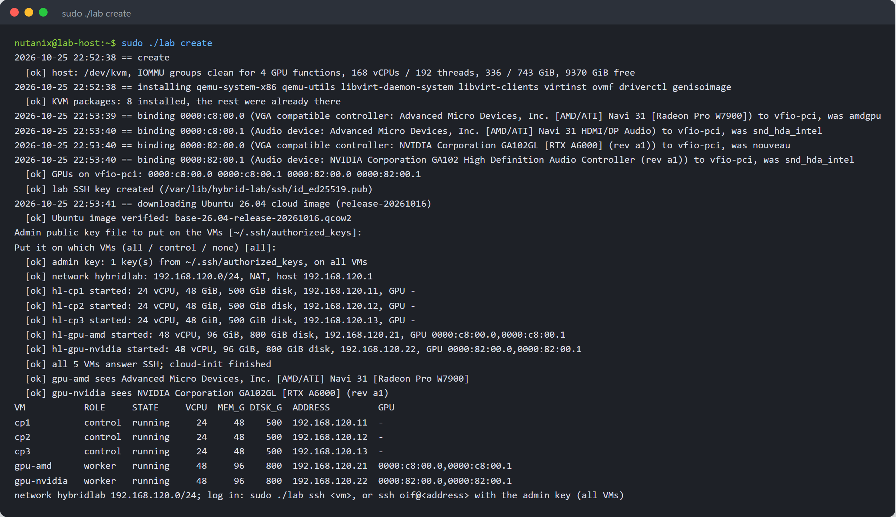
| VM | Address | Role |
|---|---|---|
| cp1, cp2, cp3 | 192.168.120.11, .12, .13 | control plane |
| gpu-amd | 192.168.120.21 | AMD GPU worker |
| gpu-nvidia | 192.168.120.22 | NVIDIA GPU worker |
| (free) | 192.168.120.10 | Kubernetes API address |
| (free) | 192.168.120.240-244 | Run:ai and Grafana addresses |
To start over at any time: sudo ./lab recreate. To remove the lab: sudo ./lab destroy.
6Install Run:ai with oif
1. Log in to the first control-plane node
Use SSH with your agent forwarded (-A): oif uses your key once to place its own key on the other nodes. For the lab, jump through the host (-J):
eval $(ssh-agent -s); ssh-add ~/.ssh/id_ed25519 ssh -A -J <user>@<host-ip> oif@192.168.120.11 # lab; for real servers: ssh -A oif@<first-node> ssh-add -l # your key must be listed
2. Get oif and fill in the settings
git clone https://github.com/manmohanbrahma/open-inference-fabric.git && cd open-inference-fabric cp .env.example .env nano .env
Set these lines (edit the existing lines, do not add new ones at the end):
HOST_IP=192.168.120.11 METALLB_RANGE=192.168.120.240-192.168.120.244 OIF_NODES="192.168.120.11:control 192.168.120.12:control 192.168.120.13:control 192.168.120.21:worker 192.168.120.22:worker" OIF_API_VIP=192.168.120.10 RUNAI_ADMIN_EMAIL=you@example.com RUNAI_ADMIN_PASSWORD=choose-one GRAFANA_ADMIN_PASSWORD=choose-one
OIF_NODES: every node asaddress:role, this node first.controlfor control-plane nodes,workerfor GPU servers.- Passwords: 12 characters or more; the Run:ai one also needs upper and lower case, a digit and a symbol.
- Leave everything else empty: AMD slices are on by default (
AMD_FRACTIONS=empty), and so are oif's patches (RUNAI_PATCHES=empty).
3. Install
sudo --preserve-env=SSH_AUTH_SOCK ./oif install
oif asks a few questions first:
| Question | Answer |
|---|---|
| Data folder | Enter (the default) |
| NVIDIA GPUs / AMD GPUs for Kubernetes | Enter (all) |
| AMD display cards to keep away from Kubernetes | none, unless a server's AMD card drives its screen |
| Put your SSH key on the other control-plane nodes too | y |
Then it continues in the background, so a dropped SSH session does not stop it. A GPU node that needs a reboot for its NVIDIA driver is rebooted by oif, which waits for it and carries on. Follow it with sudo tail -f /var/log/oif-install.log. It takes about 90 minutes the first time, most of it downloading.
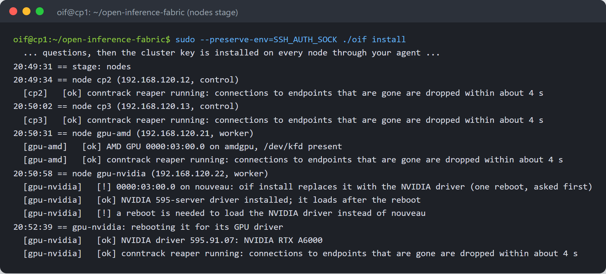
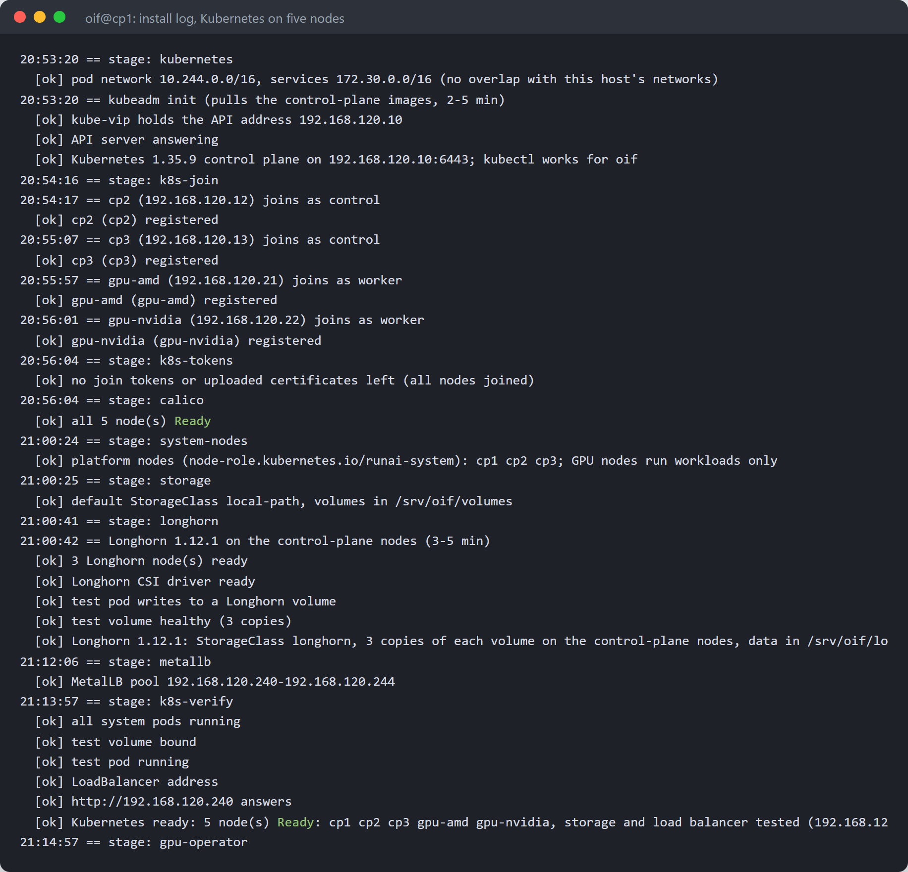
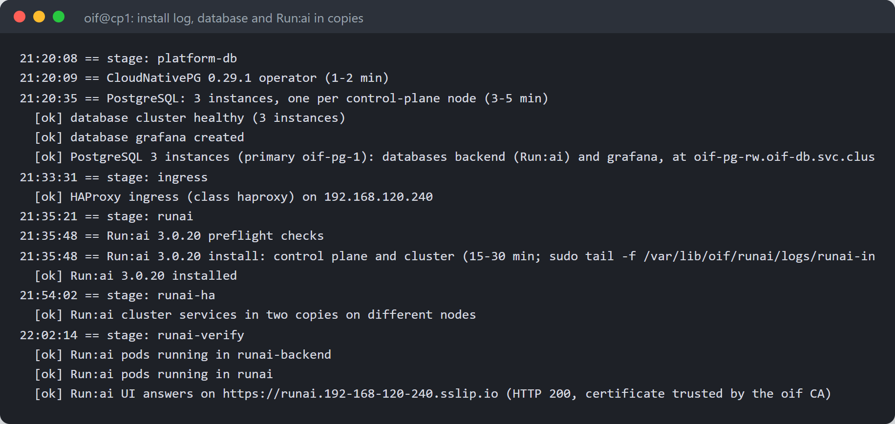
What oif does, in order
| Phase | What happens | Where |
|---|---|---|
| 1. This node | checks, packages, kernel settings, container runtime, GPU driver, one reboot if needed | first node |
| 2. Other nodes | the same on every other node, over SSH, rebooting GPU nodes for their driver | each node |
| 3. Kubernetes | cluster on the API address, the others join, network, storage, load balancer | all nodes |
| 4. GPUs | NVIDIA GPU Operator on NVIDIA nodes, AMD GPU Operator on AMD nodes, a test pod on each | GPU nodes |
| 5. Platform | replicated database, Prometheus and Grafana, the web entrance (ingress), certificates | control plane |
| 6. Run:ai | control plane and cluster together, two copies of every service, node pools per vendor, your admin account, oif's patches, test projects and quotas, AMD templates, AMD slices | control plane |
| 7. Dashboards | one set of GPU metrics for both vendors, Grafana dashboards | control plane |
You do not use Run:ai's own New cluster page: oif has already created the cluster, named oif. Its page explains this (The demo, step 14).
7Check it worked
On the first node, in open-inference-fabric:
sudo ./oif status # every stage [x] sudo tests/lab/t120-nodes.sh # every node prepared sudo tests/lab/t121-cluster.sh # all nodes Ready, the API on its shared address sudo tests/lab/t122-gpus.sh # each GPU on its node and driver sudo tests/lab/t123-runai.sh # Run:ai pools per vendor, placement, quotas, one job one vendor
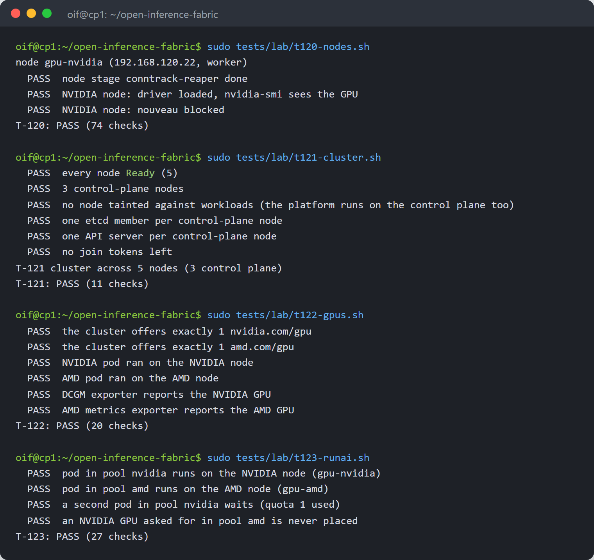
Open the Run:ai screens
From your workstation, open https://runai.192-168-120-240.sslip.io (your first load-balancer address, with dashes). For the lab, the address is inside the host, so use an SSH SOCKS tunnel and a browser that uses it:
ssh -N -D 127.0.0.1:11080 <user>@<host-ip> # leave it running
chrome --user-data-dir=$HOME/lab-chrome --proxy-server="socks5://127.0.0.1:11080" https://runai.192-168-120-240.sslip.ioTo avoid the browser's certificate warning, copy ~/oif-ca.crt from the first node and trust it on your workstation. Log in with RUNAI_ADMIN_EMAIL and its password. The first page load downloads a few MB; over a slow link give it a minute, and do not force-reload (Ctrl+F5).
8High availability
What runs in copies
| Part | Copies | When a control-plane node stops |
|---|---|---|
| Kubernetes API | 3 API servers, 3 etcd members | the API address (kube-vip) moves to another node in seconds |
| Web entrance address | MetalLB, only from control-plane nodes | another control-plane node announces it |
| HAProxy ingress | one per control-plane node | the others serve |
| Run:ai services | 2 of each, never on the same node | the other copy serves |
| Keycloak (Run:ai login) | 3, sessions shared through the database | the others serve |
| Database | CloudNativePG, 3 PostgreSQL instances, one per node | a standby becomes the primary |
| Thanos, NATS | 3 each | the others serve |
| Prometheus, Grafana | 2 each | the other serves |
| KAI Scheduler, Run:ai cluster side | 2 with leader election | the standby takes over |
Single on purpose: Run:ai's operators (they do not serve users) and cluster-redis. Redis copies do not share their data, and Run:ai's workspace logins (Jupyter links) are kept in it: two copies made those logins loop. A restart of the one copy only means logging in again.
The settings that make it fast
Copies alone were not enough. Each setting below came from a real power-off test that failed:
| Setting | Why |
|---|---|
| A silent node is declared down after 20 s (default 40 s) | the database promotes a standby only after this |
PostgreSQL max_connections 400 | two copies of every Run:ai service filled the default 100 |
| A connection reaper on every node | clients connected to a dead database kept waiting for about 15 minutes; the reaper drops those connections so they reconnect at once |
| The web entrance address only on control-plane nodes | otherwise MetalLB announced it from a GPU server |
| 20 s moves for the single services users notice | with the default 5 minutes the GPU dashboards were empty for about 8 minutes |
PostgreSQL wal_keep_size 4 GB | a database copy whose node was off for hours can still catch up |
cluster-redis at one copy | workspace logins looped with two unreplicated copies |
Test it: power off a control-plane node, step by step
- Find the node that hurts most to lose, the one with the database primary (on the first node):
kubectl -n oif-db get pods -l cnpg.io/instanceRole=primary -o wide # NODE column, e.g. cp2- On a machine outside the cluster (the lab host), start a watch that does what a user does, every 5 seconds:
while sleep 5; do
printf '%s ui %s grafana %s\n' "$(date +%T)" \
"$(curl -s -o /dev/null -w '%{http_code}' --max-time 4 --cacert oif-ca.crt https://runai.192-168-120-240.sslip.io)" \
"$(curl -s -o /dev/null -w '%{http_code}' --max-time 4 --cacert oif-ca.crt https://grafana.runai.192-168-120-240.sslip.io/api/health)"
done- Pull the power of that node. Lab:
sudo virsh destroy hl-cp2on the host. Real server: its power button or BMC. - Watch, and keep using the Run:ai UI in the browser:
kubectl get nodes -w # cp2 turns NotReady after about 20 s kubectl -n oif-db get pods -l cnpg.io/instanceRole=primary -o wide # a new primary on another node
- Power it on again (lab:
sudo virsh start hl-cp2) and watch it rejoin.
What users saw on the reference run, measured from outside the cluster, with the powered-off node holding both the database primary and the web entrance address:
| Service | Away for | Target |
|---|---|---|
| Run:ai UI | 0 s | under 90 s |
| Run:ai login and API call | 67 s | under 90 s |
| Grafana | 47 s | under 90 s |
Nobody acted. New workloads in both GPU pools and the quotas worked while the node was off.
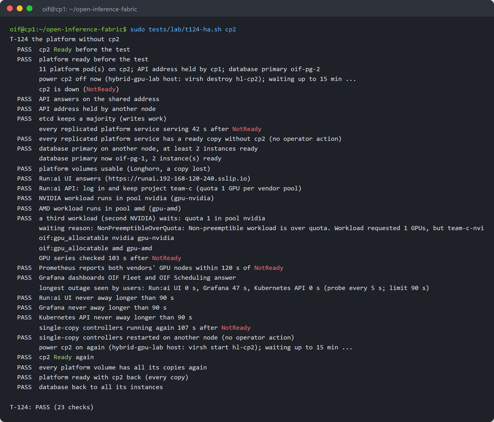
The scripted version (tests/lab/t124-ha.sh with the outside probe tests/lab/t124-probe.py) runs 23 checks.
Day-2 care
| Task | How |
|---|---|
| A control-plane node goes down | nothing; when it returns its copies rejoin. Check kubectl -n oif-db get clusters.postgresql.cnpg.io shows 3 ready |
| A node was off for more than about 20 hours | rebuild its database copy: kubectl -n oif-db delete pvc oif-pg-N and delete pod oif-pg-N |
| Planned maintenance of a node | move the database primary away first (a CloudNativePG switchover), then drain the node |
9AMD GPUs, whole GPU ("basic passthrough")
How it works
- The GPU reaches the server. On real servers it is simply in the server. In the lab it is passed through to the
gpu-amdVM (PCI passthrough), so the VM owns the whole physical card. - The driver. AMD's driver is part of the Linux kernel (
amdgpu). oif only checks it holds the GPU and that/dev/kfdexists, and adds the GPU firmware if the image left it out. - Kubernetes sees it. oif installs the AMD GPU Operator. Its device plugin offers the GPU as
amd.com/gpu, its node labeller adds labels (product name, memory size, family), and its metrics exporter feeds Prometheus. For the Radeon PRO W7900 oif raises one health threshold (kernel 7.0 reports false memory errors on that card). - Run:ai sees it. Stock Run:ai schedules
amd.com/gpubut does not list the GPU in its screens. oif's patch R1 teaches Run:ai's inventory the AMD labels, R2 gives ROCm workloads the AMD logo, R3 keeps nodes Ready when NVIDIA's slicing daemons have no node (The patches). - Pools and quotas. The AMD node goes into node pool
amd. A project's quota in poolamdlimits how many AMD GPUs it uses, exactly like NVIDIA. - Templates. oif adds Run:ai templates:
pytorch-rocm-1-gpu(a training) andjupyter-lab-rocm-1-gpu(a Jupyter workspace), each asking for one whole AMD GPU with the ROCm PyTorch image.
Run a workload on a whole AMD GPU, step by step
- Open Run:ai: Workload manager > Workloads > New workload > Training.
- Pick a project with AMD quota (oif's test project
team-chas 1 NVIDIA and 1 AMD GPU). - Pick the template pytorch-rocm-1-gpu, give it a name, Create training.
- In Workloads, it runs in pool
amdon the AMD node, with the AMD logo. Its Logs show the GPU's name.
From the command line, the same with a plain pod (a whole AMD GPU, through Run:ai's scheduler):
kubectl apply -f - <<'EOF'
apiVersion: v1
kind: Pod
metadata: {name: amd-whole-gpu, namespace: runai-team-c, labels: {runai/node-pool: amd}}
spec:
schedulerName: runai-scheduler
containers:
- {name: gpu, image: docker.io/library/busybox:1.37.0, command: [sh, -c, "ls /dev/kfd /dev/dri && sleep 3600"], resources: {limits: {amd.com/gpu: 1}}}
EOF
kubectl -n runai-team-c get pod amd-whole-gpu -o wide # Running on the AMD node10AMD GPU slices
How it works
Run:ai's slicing is done by its scheduler, KAI. On NVIDIA it works out of the box. On AMD, five things happen, four of them added by oif:
- You ask for a slice in the Run:ai screen: GPU devices 1, GPU fractioning on, 50 % of the device, pool
amd. (Or with the pod annotationgpu-fraction: "0.5".) Nothing AMD-specific to learn. - The scheduler places it on the AMD node and counts 0.5 GPU against the project's quota. oif's patch K2 removes a check that only NVIDIA nodes could pass.
- The GPU is reserved. KAI starts a small "reservation" pod that holds the whole GPU while slices of it are in use, so nobody else can take it whole. oif's patch K3 makes that pod ask for
amd.com/gpuon an AMD node, and K4 lets it find which AMD GPU it holds (by its PCI address) without NVIDIA's tools. - The slice is named. KAI's binder writes the GPU's address and the share on the workload's pod (
oif.ai/amd-gpu,oif.ai/amd-gpu-fraction). A Kubernetes policy lets only the binder write these, so nobody can grab a GPU outside the quotas. - The container gets the GPU. A slice asks Kubernetes for no
amd.com/gpu, so AMD's device plugin gives it nothing. oif's small program oif-amd-share (an NRI plugin, running on each AMD node) gives the container the GPU's device files (/dev/kfd,/dev/dri/...) when it starts, and tells it its share:OIF_GPU_MEMORY_FRACTION=0.5and PyTorch's memory capPYTORCH_ALLOC_CONF=per_process_memory_fraction:0.5.
amd-smi inside a slice always shows the whole card. PyTorch (and what runs on it, such as vLLM) keeps to its share automatically through the cap oif sets. Other programs must keep to OIF_GPU_MEMORY_FRACTION themselves. Compute is shared in time: two busy halves get about half the speed each, one half alone gets the full GPU. On NVIDIA, slices are hard limits enforced by the driver.Run AMD slices from a template, step by step
- Workload manager > Workloads > New workload > Training, project
team-c. - Template pytorch-rocm-half-gpu (half an AMD GPU, pool
amd, ROCm PyTorch already set), a name, Create training. - Create a second one the same way. Both run on the AMD node, 0.5 GPU each.
- Their Logs print the GPU, the share, the memory each may use, and after 5 minutes their compute speed.
- For Jupyter: New workload > Workspace, template jupyter-lab-rocm-half-gpu, then Connect to open JupyterLab.
Run AMD slices from scratch, step by step
- New workload > Training, a project, Start from scratch, a name.
- Environment: a ROCm image, for example
docker.io/rocm/pytorch:rocm10.1.0_ubuntu24.04_py3.12_pytorch_release_2.14.0, and its command. - Compute resources: GPU devices
1, switch on GPU fractioning, GPU memory % of device50. The total reads 0.50 GPUs. - Nodes: keep only
amd: click the X on thenvidiaanddefaultrows. Otherwise the slice runs on the NVIDIA GPU first. - Create training.
Check a slice from inside (a notebook)
In a Jupyter workspace from jupyter-lab-rocm-half-gpu, run the following. For the same checks cell by cell, with the output to expect and a ready notebook, see demo step 9.
import os, torch
for k in ("RUNAI_PROJECT", "RUNAI_JOB_NAME", "OIF_GPU_PCI", "OIF_GPU_MEMORY_FRACTION", "PYTORCH_ALLOC_CONF"):
print(f"{k:25} {os.environ.get(k)}")
free, total = torch.cuda.mem_get_info()
share = float(os.environ["OIF_GPU_MEMORY_FRACTION"])
print(f"GPU memory {total/2**30:.1f} GiB, this pod's share {share} = {share*total/2**30:.1f} GiB")
for gib in (20, 25):
try:
x = torch.empty(int(gib * 2**30) // 2, dtype=torch.float16, device="cuda"); print(f"{gib} GiB: allocated"); del x
except torch.OutOfMemoryError:
print(f"{gib} GiB: refused (over the share)")RUNAI_PROJECT team-c RUNAI_JOB_NAME test OIF_GPU_PCI 0000:03:00.0 OIF_GPU_MEMORY_FRACTION 0.5 PYTORCH_ALLOC_CONF per_process_memory_fraction:0.5 GPU memory 45.0 GiB, this pod's share 0.5 = 22.5 GiB 20 GiB: allocated 25 GiB: refused (over the share)
NVIDIA slices, for comparison
The same screen with pool nvidia gives an NVIDIA slice. It needs NVIDIA driver 615 or later (oif installs the 615 branch) and Run:ai's own GPU-fractioning daemons. There, the driver enforces the memory: nvidia-smi inside a half shows 24,570 MiB of the A6000's 49,140 MiB.
11One job, one vendor
- Pool order. oif sets every Run:ai department's default node pools to
nvidia,amd,default; projects inherit
it. A workload submitted without choosing a pool tries the GPU pools first, instead of waiting in default, which has no GPUs.
- One pod group, one pool. KAI schedules all the pods of a workload as one group in one node pool, so a multi-pod
job never spreads over both vendors.
- Refused if it asks for both. A Kubernetes policy (
oif-one-gpu-vendor) refuses a pod that asks for
nvidia.com/gpu and amd.com/gpu together: it could never run.
12The demo, step by step
Everything below is on the reference lab, in the order you would show it.
1. Overview
Log in. Analytics > Overview shows the GPU nodes and GPUs, running and pending workloads.
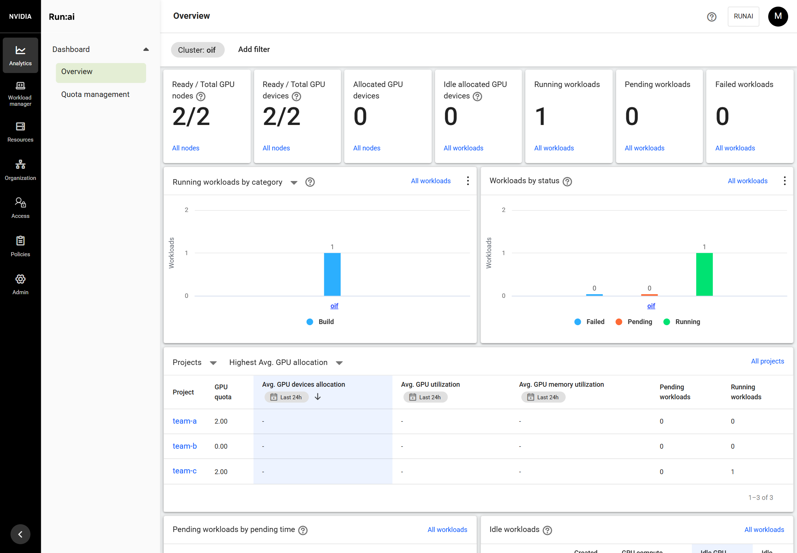
2. The cluster
Resources > Clusters: one cluster, oif, Connected, Run:ai 3.0.20.
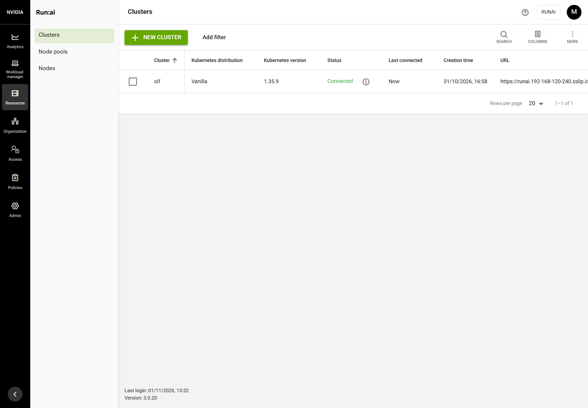
3. Nodes and their pools
Resources > Nodes: the three control-plane nodes in pool default, gpu-amd in pool amd with its Radeon PRO W7900, gpu-nvidia in pool nvidia with its RTX A6000.
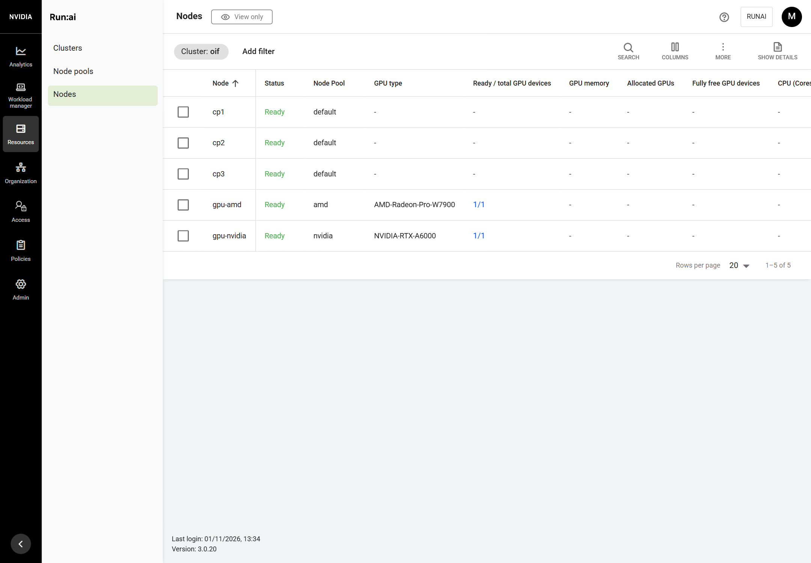
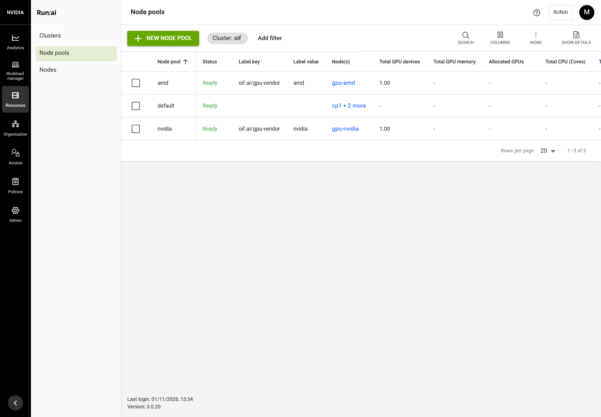
4. Projects and quotas
Organization > Projects: team-a, team-b, team-c, each with GPU quota per pool.
5. Templates for both vendors
Workload manager > Templates: Run:ai's NVIDIA templates and oif's AMD ones, for a whole GPU and for half a GPU.
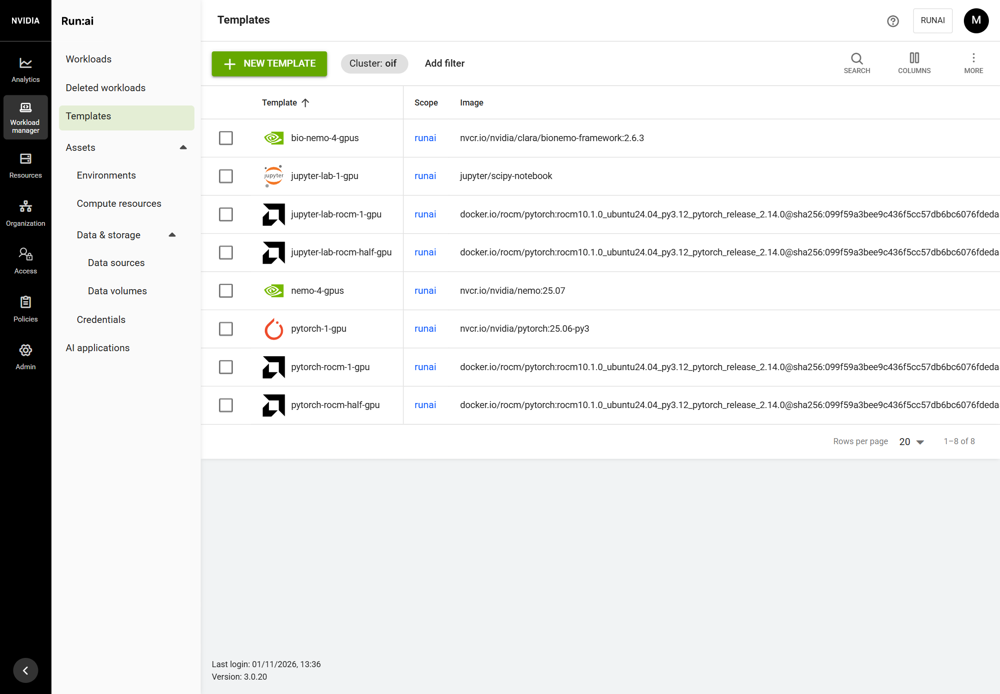
6. A whole GPU per vendor, and the quota holding
Run one NVIDIA workload, one AMD workload, then a second NVIDIA workload in team-c (1 GPU of each vendor). The first two run, each on its vendor's node; the third waits, because team-c's NVIDIA quota is used.
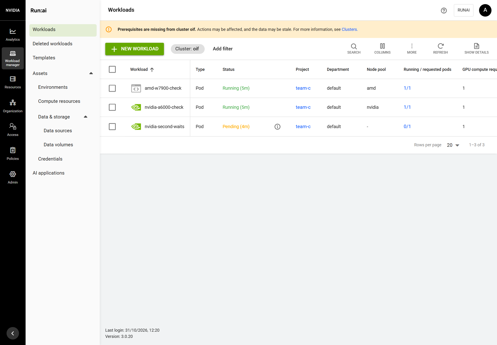
7. NVIDIA slices
Two trainings at 50 % of the device in pool nvidia share the A6000; a third waits on the quota.
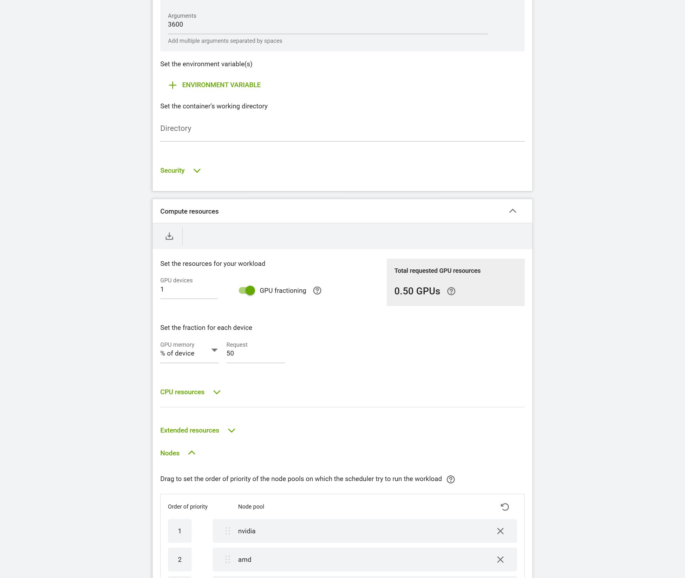
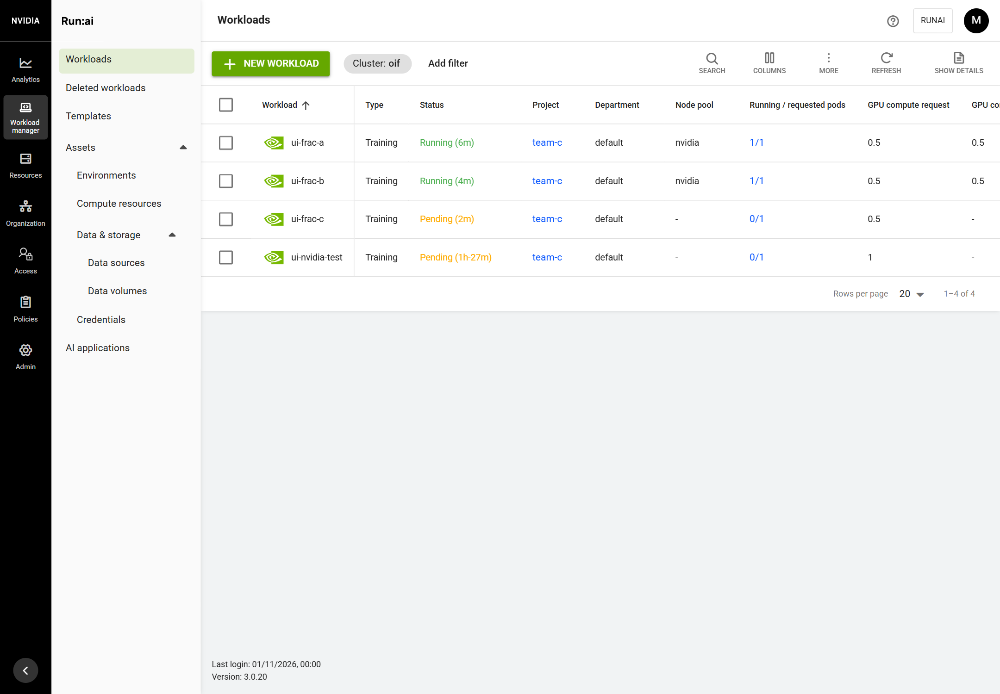
8. AMD slices
The same form with pool amd only.
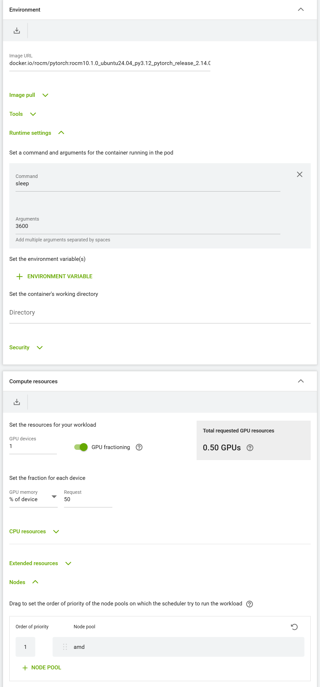
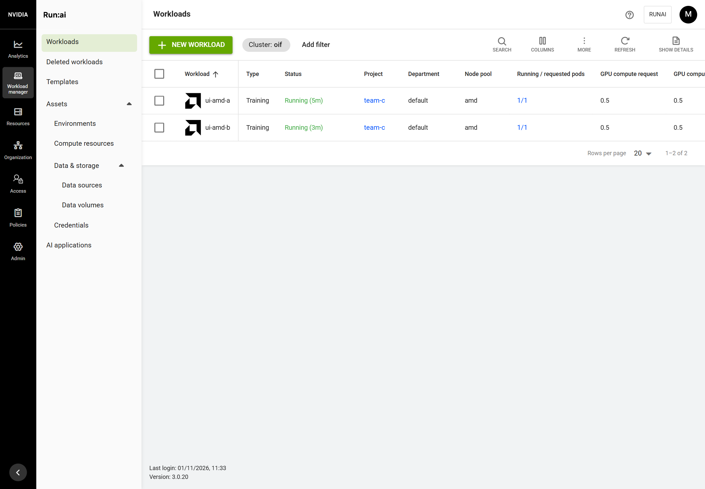
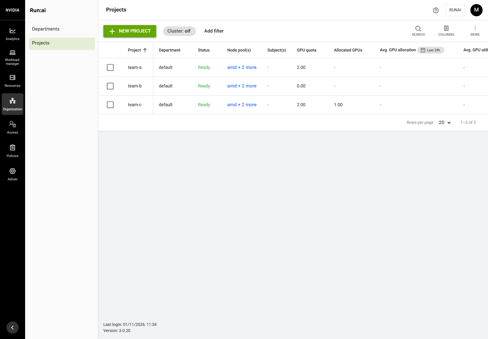
9. A Jupyter workspace on half an AMD GPU
- Workload manager > Workloads > New workload > Workspace.
- Pick a project with AMD quota (here
team-c), choose template jupyter-lab-rocm-half-gpu, give it a name (heretest), and click Create workspace. - Wait until its status is Running (the first time takes a few minutes while the node downloads the ROCm image).
- Open the workspace's Logs tab. The first line shows the share it got: half of the AMD GPU at
0000:03:00.0. - Click Connect > Jupyter. JupyterLab opens in a new browser tab. If the page stays blank, open the link in a private window.
- In JupyterLab: File > New > Notebook, kernel Python 3.
- Paste each cell below into its own notebook cell and run it with Shift+Enter.
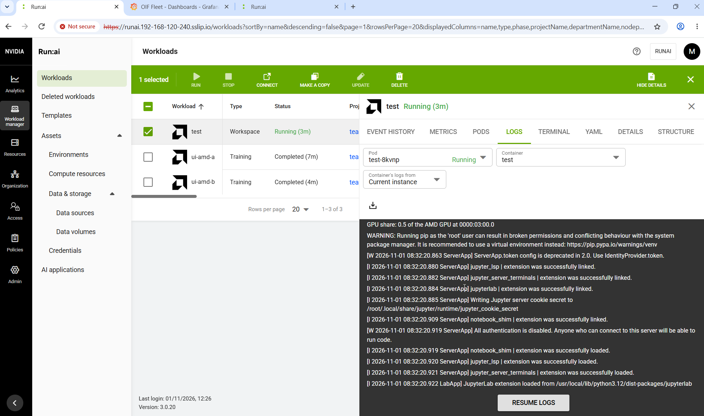
Cell 1: who am I, and what share did Run:ai give me. Run:ai sets the project and workload names; oif's plugin sets the GPU's address and the share.
import os
for k in ("RUNAI_PROJECT", "RUNAI_JOB_NAME", "OIF_GPU_PCI", "OIF_GPU_MEMORY_FRACTION", "PYTORCH_ALLOC_CONF"):
print(f"{k:25} {os.environ.get(k)}")RUNAI_PROJECT team-c RUNAI_JOB_NAME test OIF_GPU_PCI 0000:03:00.0 OIF_GPU_MEMORY_FRACTION 0.5 PYTORCH_ALLOC_CONF per_process_memory_fraction:0.5
Cell 2: which GPU this container can reach. Only the AMD GPU's own device files are inside, and PyTorch sees the W7900.
import os, torch
print("device files:", sorted(os.listdir("/dev/dri")), "| /dev/kfd:", os.path.exists("/dev/kfd"))
p = torch.cuda.get_device_properties(0)
print(f"{p.name} | {p.gcnArchName} | {p.multi_processor_count} compute units | {p.total_memory/2**30:.1f} GiB physical")
print("PyTorch", torch.__version__, "| HIP", torch.version.hip)device files: ['card0', 'renderD128'] | /dev/kfd: True AMD Radeon Pro W7900 | gfx1100 | 48 compute units | 45.0 GiB physical PyTorch 2.14.0+rocm10.1.0 | HIP 7.16.26385
PyTorch counts 48 "compute units" where amd-smi says 96: PyTorch counts pairs (work-group processors). It is the same whole chip.
Cell 3: the card's memory and this pod's share. The share is a limit that PyTorch keeps: 20 GiB fits in the half, 25 GiB does not.
import os, torch
free, total = torch.cuda.mem_get_info()
share = float(os.environ.get("OIF_GPU_MEMORY_FRACTION", "1"))
print(f"GPU memory {total/2**30:.1f} GiB, free {free/2**30:.1f} GiB, this pod's share {share} = {share*total/2**30:.1f} GiB")
for gib in (20, 25):
try:
x = torch.empty(int(gib * 2**30) // 2, dtype=torch.float16, device="cuda"); print(f"{gib} GiB: allocated"); del x
except torch.OutOfMemoryError:
print(f"{gib} GiB: refused (over the share)")
torch.cuda.empty_cache()GPU memory 45.0 GiB, free 44.9 GiB, this pod's share 0.5 = 22.5 GiB 20 GiB: allocated 25 GiB: refused (over the share)
Cell 4: what the driver sees. amd-smi shows the whole card, because a W7900 has no hardware partitions. The ! runs a shell command from the notebook.
!amd-smi static --gpu 0 --asic --vram | head -30 !amd-smi metric --gpu 0 --usage --mem-usage
Expect MARKET_NAME: AMD Radeon Pro W7900, 48 GB of VRAM, and the GPU's current use.
Cell 5: how fast is this half (30 seconds). A matrix-multiply test. Alone on the card it reached 49.8 TFLOPS in the lab; while another half-GPU workload is busy on the same card, each gets about 24.
import time, torch
a = torch.randn(8192, 8192, device="cuda", dtype=torch.float16); torch.cuda.synchronize()
t, n = time.time(), 0
while time.time() - t < 30: a @ a; n += 1
torch.cuda.synchronize(); print(f"fp16 matmul: {n * 2 * 8192**3 / (time.time() - t) / 1e12:.1f} TFLOPS")fp16 matmul: 24.2 TFLOPS
10. Inside the notebook
Cells 1 to 3 as they ran in the lab: the share, the device files, and 25 GiB refused.
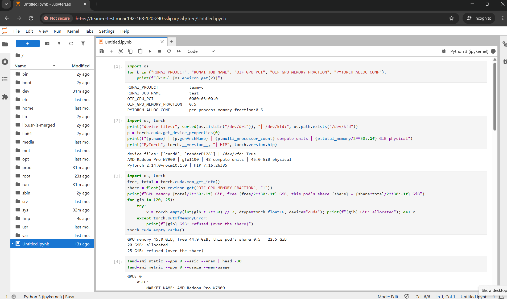
11. The limit holds from the terminal too
In the workspace's Terminal tab:
python3 -c "import torch; x = torch.empty(int(30*2**30)//2, dtype=torch.float16, device='cuda')"
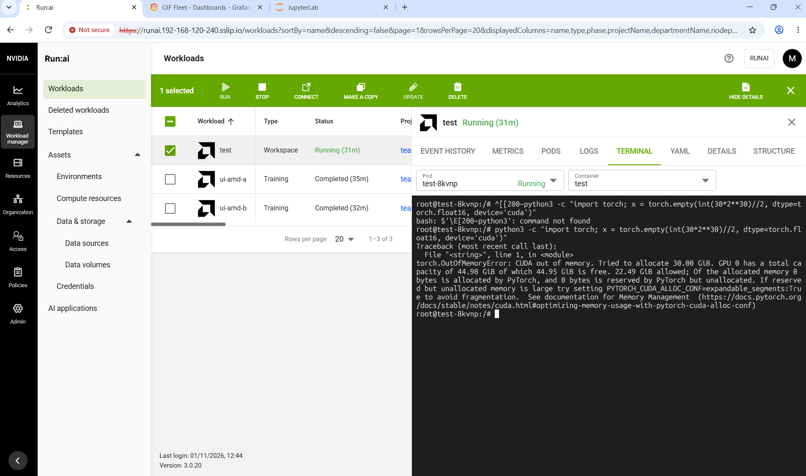
12. What the driver sees
amd-smi in the same container shows the whole card: there is no hardware partition on a W7900. Under load the card runs at its 241 W power cap.
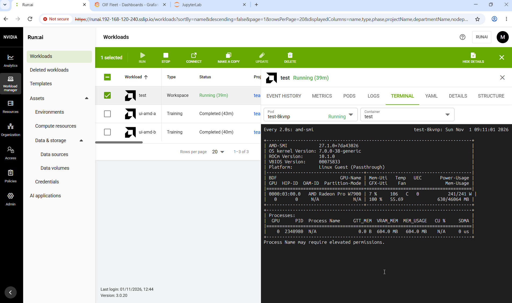
13. Run:ai's record of the slice
On the first node:
kubectl -n runai-team-c get pod -l workloadName=test -o jsonpath='{.items[0].metadata.annotations}' | tr ',' '\n' | grep -E 'runai-allocated|gpu-fraction|oif.ai'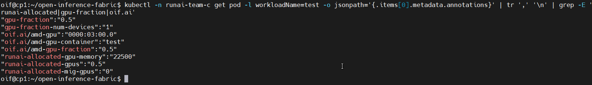
14. The New cluster page
Resources > Clusters > New cluster explains that clusters are added with oif, instead of offering NVIDIA's stock install command (which has no AMD support).
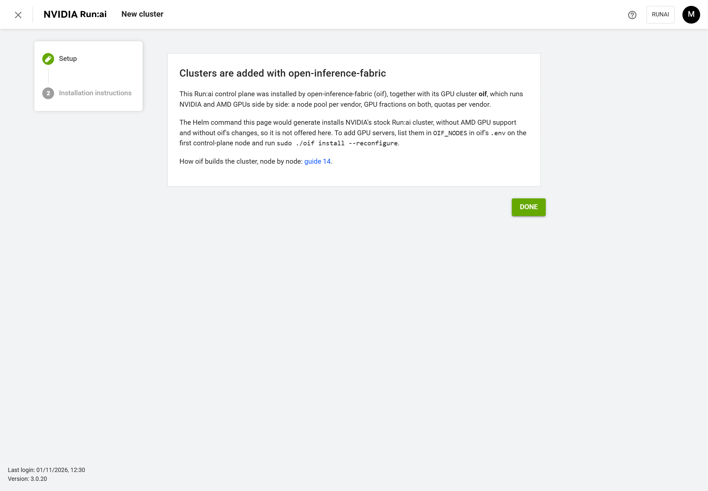
15. Both vendors in Grafana
Grafana (https://grafana.runai.192-168-120-240.sslip.io, user admin), dashboard OIF Fleet: both GPUs side by side.
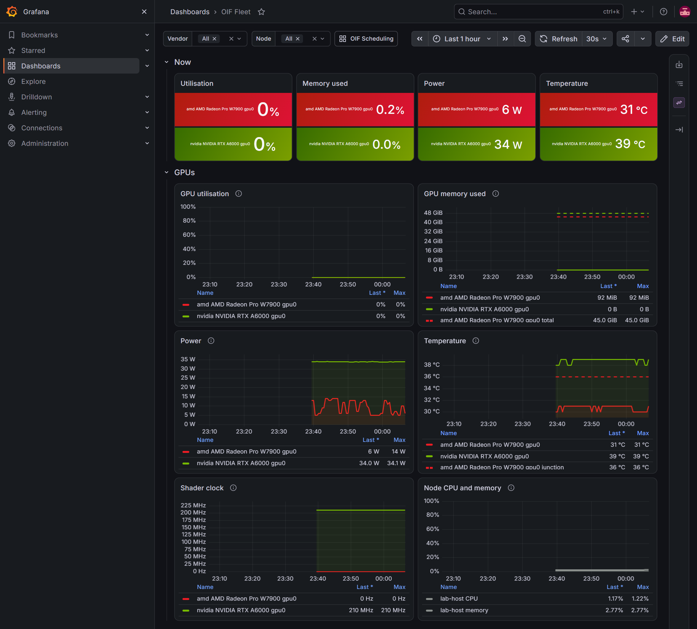
16. Power off a control-plane node
The HA test from High availability: users keep working, logins return within 90 seconds.
13The patches
oif changes two projects, always at install time, from the pinned release's source:
- downloads the source of the pinned release and checks its checksum;
- applies the patches with
git apply, checks formatting, runs the unit tests (the patches bring their own tests); - builds the changed program and puts it on top of the original container image (no Docker, no registry needed);
- loads the new image on every node and points Run:ai at it.
RUNAI_PATCHES=none (Run:ai patches) and AMD_FRACTIONS=none (KAI patches and the AMD slice plugin) in .env, then sudo ./oif install --reconfigure, put the original images back.
| # | Project | File | What it changes |
|---|---|---|---|
| R1 | Run:ai cluster-sync | patches/runai/3.0.20/0001-cluster-sync-count-amd-gpus-on-mixed-nodes.patch | Run:ai's inventory counts AMD GPUs (type, count, memory) |
| R2 | Run:ai web UI | patches/runai/3.0.20/0002-frontend-amd-logo-for-rocm-images.patch | the AMD logo for workloads on ROCm images |
| R3 | Run:ai operator | patches/runai/3.0.20/0003-go-operator-fractions-unavailable-without-target-nodes.patch | nodes stay Ready when NVIDIA's slicing daemons have no node |
| R4 | Run:ai web UI | patches/runai/3.0.20/0004-frontend-new-cluster-points-to-oif.patch | the New cluster page explains clusters are added with oif |
| K1 | KAI common | patches/kai/v0.18.3/0001-common-amd-gpu-node.patch | recognises an AMD GPU node |
| K2 | KAI scheduler | patches/kai/v0.18.3/0002-scheduler-fractions-on-amd-gpu-nodes.patch | allows slices on AMD GPU nodes |
| K3 | KAI binder | patches/kai/v0.18.3/0003-binder-fractions-on-amd-gpu-nodes.patch | reserves an amd.com/gpu and names the slice's GPU |
| K4 | KAI reservation | patches/kai/v0.18.3/0004-resourcereservation-amd-gpu-device.patch | finds the AMD GPU it holds |
| P | new program | images/oif-amd-share/ | gives a slice's container the AMD GPU and its share |
Settings oif makes without patching code: cluster-redis at one copy; KAI's images set through Run:ai's own configuration; on AMD-only nodes, containerd's runtime name nvidia runs the normal runtime (KAI gives every slice that name, before it knows the vendor); the policies oif-one-gpu-vendor and oif-amd-share-annotations.
What oif proposes to send to the Run:ai and KAI projects, item by item with its status, is in docs/UPSTREAM.md.
The full patches
patches/runai/3.0.20/0001-cluster-sync-count-amd-gpus-on-mixed-nodes.patch (97 lines added, 9 removed)
diff --git a/runai-cluster/cluster/cluster-sync/pkg/handlers/parsers/node_parser.go b/runai-cluster/cluster/cluster-sync/pkg/handlers/parsers/node_parser.go
index dd4d3141..e0f011bb 100644
--- a/runai-cluster/cluster/cluster-sync/pkg/handlers/parsers/node_parser.go
+++ b/runai-cluster/cluster/cluster-sync/pkg/handlers/parsers/node_parser.go
@@ -54,10 +54,15 @@ const (
NotReadyPhase = "NotReady"
MissingPrerequisitesPhase = "MissingPrerequisites"
- NvidiaGpuCountLabelKey = "nvidia.com/gpu.count"
- NvidiaGpuTypeLabelKey = "nvidia.com/gpu.product"
- NvidiaGpuMemoryLabelKey = "nvidia.com/gpu.memory"
- AmdGpuTypeLabelPrefix = "beta.amd.com/gpu.family."
+ NvidiaGpuCountLabelKey = "nvidia.com/gpu.count"
+ NvidiaGpuTypeLabelKey = "nvidia.com/gpu.product"
+ NvidiaGpuMemoryLabelKey = "nvidia.com/gpu.memory"
+ AmdGpuTypeLabelPrefix = "beta.amd.com/gpu.family."
+ // The AMD GPU Operator's node labeller: amd.com/gpu.product-name=<name>, and the legacy
+ // beta.amd.com/gpu.product-name.<name>=<count of GPUs with that name on the node>.
+ AmdGpuProductNameLabelKey = "amd.com/gpu.product-name"
+ AmdGpuProductCountLabelPrefix = "beta.amd.com/gpu.product-name."
+ AmdGpuVramLabelKey = "amd.com/gpu.vram"
GPUNetworkAccelerationLabelKey = "gpuNetworkAccelerationLabelKey"
NvidiaGpuCliqueLabel = "nvidia.com/gpu.clique"
@@ -588,12 +593,20 @@ func parseTaints(taints []corev1.Taint) []swagger.NodeTaint {
func getGpuInfo(nodeLabels map[string]string, nodeName string) *swagger.GpuInfo {
nvidiaGpuInfo := getNvidiaGpuInfo(nodeLabels, nodeName)
- if nvidiaGpuInfo != nil {
- return nvidiaGpuInfo
- }
-
amdGpuInfo := getAmdGpuInfo(nodeLabels, nodeName)
- if amdGpuInfo != nil {
+
+ switch {
+ case nvidiaGpuInfo != nil && amdGpuInfo != nil:
+ // A node with GPUs of both vendors: one GpuInfo per node, so report both types and the
+ // total count. The memory stays the NVIDIA GPU's (the field holds one device's memory).
+ return &swagger.GpuInfo{
+ GpuType: nvidiaGpuInfo.GpuType + " + " + amdGpuInfo.GpuType,
+ GpuCount: nvidiaGpuInfo.GpuCount + amdGpuInfo.GpuCount,
+ GpuMemoryBytes: nvidiaGpuInfo.GpuMemoryBytes,
+ }
+ case nvidiaGpuInfo != nil:
+ return nvidiaGpuInfo
+ case amdGpuInfo != nil:
return amdGpuInfo
}
@@ -657,6 +670,52 @@ func getNvidiaGpuMemoryBytes(nodeLabels map[string]string, nodeName string) *int
}
func getAmdGpuInfo(nodeLabels map[string]string, nodeName string) *swagger.GpuInfo {
+ if info := getAmdGpuInfoByProductName(nodeLabels, nodeName); info != nil {
+ return info
+ }
+ return getAmdGpuInfoByFamily(nodeLabels, nodeName)
+}
+
+// The product name ("AMD_Radeon_Pro_W7900") names the GPU model like nvidia.com/gpu.product does;
+// the family table below predates current AMD GPUs (a W7900 is family "GC_11_0_0").
+func getAmdGpuInfoByProductName(nodeLabels map[string]string, nodeName string) *swagger.GpuInfo {
+ productName, found := nodeLabels[AmdGpuProductNameLabelKey]
+ if !found || productName == "" {
+ return nil
+ }
+
+ result := &swagger.GpuInfo{
+ GpuType: strings.ReplaceAll(productName, "_", "-"),
+ GpuMemoryBytes: getAmdGpuMemoryBytes(nodeLabels[AmdGpuVramLabelKey]),
+ }
+
+ countStr, countFound := nodeLabels[AmdGpuProductCountLabelPrefix+productName]
+ if !countFound {
+ zap.S().Warnf("Found amd gpu type <%s> on node <%s>, but can't find gpu count", productName, nodeName)
+ return result
+ }
+
+ count, err := strconv.Atoi(countStr)
+ if err != nil {
+ zap.S().Errorf("Failed to parse amd gpu count label value: <%s> for node <%s>, error: %s",
+ countStr, nodeName, err.Error())
+ return result
+ }
+
+ result.GpuCount = int32(count)
+ return result
+}
+
+// amd.com/gpu.vram is a size in GiB with a G suffix ("45G"); nil when it is missing or unusable.
+func getAmdGpuMemoryBytes(vram string) *int64 {
+ gib, err := strconv.Atoi(strings.TrimSuffix(vram, "G"))
+ if err != nil || gib <= 0 {
+ return nil
+ }
+ return ptr.To(int64(gib) * 1024 * bytesInMib)
+}
+
+func getAmdGpuInfoByFamily(nodeLabels map[string]string, nodeName string) *swagger.GpuInfo {
for key, value := range nodeLabels {
if !strings.HasPrefix(key, AmdGpuTypeLabelPrefix) {
continue
diff --git a/runai-cluster/cluster/cluster-sync/pkg/handlers/parsers/parsers_test.go b/runai-cluster/cluster/cluster-sync/pkg/handlers/parsers/parsers_test.go
index 9f391685..44d6f358 100644
--- a/runai-cluster/cluster/cluster-sync/pkg/handlers/parsers/parsers_test.go
+++ b/runai-cluster/cluster/cluster-sync/pkg/handlers/parsers/parsers_test.go
@@ -1059,6 +1059,35 @@ var _ = Describe("Parsers", Ordered, func() {
Expect(gpuInfo.GpuCount).To(BeEquivalentTo(0))
})
+ It("Parse Node To Update Info Request - AMD Gpu - product name from the AMD GPU Operator", func() {
+ node.Status.Conditions = []corev1.NodeCondition{readyCondition}
+ node.Labels[parsers.AmdGpuProductNameLabelKey] = "AMD_Radeon_Pro_W7900"
+ node.Labels[parsers.AmdGpuProductCountLabelPrefix+"AMD_Radeon_Pro_W7900"] = "1"
+ node.Labels[parsers.AmdGpuVramLabelKey] = "45G"
+ node.Labels[parsers.AmdGpuTypeLabelPrefix+"GC_11_0_0"] = "1"
+
+ parsedNodeInfo := nodeParser.ParseNodeToServerScheme(node)
+ gpuInfo := parsedNodeInfo.GpuInfo.Get()
+ Expect(gpuInfo.GpuType).To(Equal("AMD-Radeon-Pro-W7900"))
+ Expect(gpuInfo.GpuCount).To(BeEquivalentTo(1))
+ Expect(*gpuInfo.GpuMemoryBytes).To(BeEquivalentTo(int64(45) * 1024 * 1024 * 1024))
+ })
+
+ It("Parse Node To Update Info Request - NVIDIA and AMD Gpus on one node", func() {
+ node.Status.Conditions = []corev1.NodeCondition{readyCondition}
+ node.Labels[parsers.NvidiaGpuTypeLabelKey] = testGpuTypeA100
+ node.Labels[parsers.NvidiaGpuCountLabelKey] = "2"
+ node.Labels[parsers.NvidiaGpuMemoryLabelKey] = "40960"
+ node.Labels[parsers.AmdGpuProductNameLabelKey] = "AMD_Radeon_Pro_W7900"
+ node.Labels[parsers.AmdGpuProductCountLabelPrefix+"AMD_Radeon_Pro_W7900"] = "1"
+
+ parsedNodeInfo := nodeParser.ParseNodeToServerScheme(node)
+ gpuInfo := parsedNodeInfo.GpuInfo.Get()
+ Expect(gpuInfo.GpuType).To(Equal(testGpuTypeA100 + " + AMD-Radeon-Pro-W7900"))
+ Expect(gpuInfo.GpuCount).To(BeEquivalentTo(3))
+ Expect(*gpuInfo.GpuMemoryBytes).To(BeEquivalentTo(int64(40960) * 1024 * 1024))
+ })
+
It("Parse Node To Update Info Request - NV Link DomainUid and CliqueID.", func() {
node.Annotations = map[string]string{parsers.GPUNetworkAccelerationLabelKey: parsers.NvidiaGpuCliqueLabel}
node.Labels[parsers.NvidiaGpuCliqueLabel] = testDomainCliqueValue
patches/runai/3.0.20/0002-frontend-amd-logo-for-rocm-images.patch (35 lines added, 3 removed)
diff --git a/control-plane/frontend/src/common/icon.util/icon.util.test.ts b/control-plane/frontend/src/common/icon.util/icon.util.test.ts
index 6815a1dc..aaba1a95 100644
--- a/control-plane/frontend/src/common/icon.util/icon.util.test.ts
+++ b/control-plane/frontend/src/common/icon.util/icon.util.test.ts
@@ -4,14 +4,14 @@
*/
import { describe, it, expect } from "vitest";
-import { getNimIconIfNimImage, getHuggingFaceIcon } from "./icon.util";
+import { getNimIconIfNimImage, getHuggingFaceIcon, getNvidiaImageBasedIcon, isAmdImage } from "./icon.util";
import {
NIM_WORKLOAD_LABEL,
NIM_IMAGE_PREFIX,
LLM_IMAGE_FOR_HUGGING_FACE,
LLM_IMAGE_FOR_TGI,
} from "@/models/inference.model";
-import { allWorkloadsIconsMap } from "../icons.constant";
+import { allWorkloadsIconsMap, AMD_WORKLOAD_ICON } from "../icons.constant";
import { EWorkloadType } from "@/models/workload.model";
import type { Label } from "@/swagger-models/assets-service-client";
@@ -378,3 +378,20 @@ describe("getHuggingFaceIcon", () => {
});
});
});
+
+describe("getNvidiaImageBasedIcon - AMD ROCm images", () => {
+ it("should return the AMD icon for ROCm images", () => {
+ expect(getNvidiaImageBasedIcon("docker.io/rocm/pytorch:rocm10.1.0_ubuntu24.04_py3.12_pytorch_release_2.14.0")).toBe(
+ AMD_WORKLOAD_ICON,
+ );
+ expect(getNvidiaImageBasedIcon("rocm/vllm:latest")).toBe(AMD_WORKLOAD_ICON);
+ expect(getNvidiaImageBasedIcon("registry.example.com/mirror/rocm/pytorch@sha256:abc")).toBe(AMD_WORKLOAD_ICON);
+ });
+
+ it("should keep the NVIDIA icons and ignore look-alikes", () => {
+ expect(getNvidiaImageBasedIcon("nvcr.io/nvidia/pytorch:25.06-py3")).toBe("pytorch");
+ expect(getNvidiaImageBasedIcon("nvcr.io/nvidia/nemo:25.07")).toBe("nvidia");
+ expect(getNvidiaImageBasedIcon("myrocm/tool:1")).toBeNull();
+ expect(isAmdImage("jupyter/scipy-notebook")).toBe(false);
+ });
+});
diff --git a/control-plane/frontend/src/common/icon.util/icon.util.ts b/control-plane/frontend/src/common/icon.util/icon.util.ts
index ea6ae585..1704514d 100644
--- a/control-plane/frontend/src/common/icon.util/icon.util.ts
+++ b/control-plane/frontend/src/common/icon.util/icon.util.ts
@@ -9,7 +9,7 @@ import {
NIM_IMAGE_PREFIX,
NIM_WORKLOAD_LABEL,
} from "@/models/inference.model";
-import { allWorkloadsIconsMap } from "../icons.constant";
+import { allWorkloadsIconsMap, AMD_WORKLOAD_ICON } from "../icons.constant";
import { EWorkloadType } from "@/models/workload.model";
import type { Label } from "@/swagger-models/assets-service-client";
@@ -23,6 +23,12 @@ export function isNvidiaPytorch(image: string | null | undefined): boolean {
return image.includes("nvcr.io/nvidia/pytorch");
}
+// AMD's ROCm images live under rocm/ (docker.io/rocm/pytorch, rocm/vllm, a mirror's .../rocm/...).
+export function isAmdImage(image: string | null | undefined): boolean {
+ if (!image) return false;
+ return /(^|\/)rocm\//.test(image);
+}
+
export function getNvidiaImageBasedIcon(image: string | null | undefined): string | null {
if (!image) return null;
@@ -30,6 +36,8 @@ export function getNvidiaImageBasedIcon(image: string | null | undefined): strin
if (isNvidiaImage(image)) return "nvidia";
+ if (isAmdImage(image)) return AMD_WORKLOAD_ICON;
+
return null;
}
diff --git a/control-plane/frontend/src/common/icons.constant.ts b/control-plane/frontend/src/common/icons.constant.ts
index bc1e87dd..a9b614b9 100644
--- a/control-plane/frontend/src/common/icons.constant.ts
+++ b/control-plane/frontend/src/common/icons.constant.ts
@@ -20,6 +20,7 @@ export const toolTypeIconsMap: Record<string, string> = {
};
export const NVIDIA_WORKLOAD_ICON = "nvidia";
+export const AMD_WORKLOAD_ICON = "amd";
export const GENERIC_WORKLOAD_ICON = "custom-tool";
export const jobKindIconsMap: Record<string, string> = {
@@ -45,6 +46,7 @@ export const jobKindIconsMap: Record<string, string> = {
HuggingFace: "hugging-face",
NvidiaNim: "nvidianim",
Nvidia: NVIDIA_WORKLOAD_ICON,
+ Amd: AMD_WORKLOAD_ICON,
VLLM: "vllm",
TGI: "tgi",
};
diff --git a/control-plane/frontend/src/assets/icons/svg/amd.svg b/control-plane/frontend/src/assets/icons/svg/amd.svg
new file mode 100644
index 00000000..88db75ca
--- /dev/null
+++ b/control-plane/frontend/src/assets/icons/svg/amd.svg
@@ -0,0 +1,5 @@
+<?xml version="1.0" encoding="utf-8"?>
+<!-- AMD arrow mark. Path data from Simple Icons (CC0-1.0); the view box shows only the arrow, not the wordmark. -->
+<svg version="1.1" xmlns="http://www.w3.org/2000/svg" viewBox="18.1 8.9 6.1 6.1">
+<path fill="#000000" d="M18.324 9.137l1.559 1.56h2.556v2.557L24 14.814V9.137zM2 9.52l-2 4.96h1.309l.37-.982H3.9l.408.982h1.338L3.432 9.52zm4.209 0v4.955h1.238v-3.092l1.338 1.562h.188l1.338-1.556v3.091h1.238V9.52H10.47l-1.592 1.845L7.287 9.52zm6.283 0v4.96h2.057c1.979 0 2.88-1.046 2.88-2.472 0-1.36-.937-2.488-2.747-2.488zm1.237.91h.792c1.17 0 1.63.711 1.63 1.57 0 .728-.372 1.572-1.616 1.572h-.806zm-10.985.273l.791 1.932H2.008zm17.137.307l-1.604 1.603v2.25h2.246l1.604-1.607h-2.246z"/>
+</svg>
patches/runai/3.0.20/0003-go-operator-fractions-unavailable-without-target-nodes.patch (56 lines added, 0 removed)
diff --git a/runai-cluster/cluster/go-operator/pkg/controller-utils/gpu_fractioning_checker.go b/runai-cluster/cluster/go-operator/pkg/controller-utils/gpu_fractioning_checker.go
index 69e01970..81aae179 100644
--- a/runai-cluster/cluster/go-operator/pkg/controller-utils/gpu_fractioning_checker.go
+++ b/runai-cluster/cluster/go-operator/pkg/controller-utils/gpu_fractioning_checker.go
@@ -46,6 +46,16 @@ func CheckGpuFractioningReadiness(ctx context.Context, reader client.Reader) run
}
if status != "False" {
+ // Ready is also True when the fractioning daemons have no node to run on (their node selector
+ // matches none), and then no node can run fractions: report that instead of "available", or
+ // every GPU node shows a missing fractions prerequisite and counts as not ready.
+ if conditionReason(config, "FractiondReady") == noTargetNodesReason &&
+ conditionReason(config, "MpsdReady") == noTargetNodesReason {
+ return runv1.PublicStatus{
+ Available: runv1.AvailableStatus(false),
+ Reason: "GPU fractions are not deployed on any node: kai-gpu-fractioning has no target nodes",
+ }
+ }
return runv1.PublicStatus{Available: runv1.AvailableStatus(true)}
}
@@ -61,6 +71,27 @@ func CheckGpuFractioningReadiness(ctx context.Context, reader client.Reader) run
var validConditionStatuses = map[string]bool{"True": true, "False": true, "Unknown": true}
+const noTargetNodesReason = "NoTargetNodes"
+
+// conditionReason returns the reason of the condition of that type, or "" when there is none.
+func conditionReason(config *unstructured.Unstructured, conditionType string) string {
+ conditions, ok, err := unstructured.NestedSlice(config.Object, "status", "conditions")
+ if err != nil || !ok {
+ return ""
+ }
+ for _, c := range conditions {
+ condMap, ok := c.(map[string]interface{})
+ if !ok {
+ continue
+ }
+ if condType, _, _ := unstructured.NestedString(condMap, "type"); condType == conditionType {
+ reason, _, _ := unstructured.NestedString(condMap, "reason")
+ return reason
+ }
+ }
+ return ""
+}
+
func readyCondition(config *unstructured.Unstructured) (status, message string, found bool) {
conditions, ok, err := unstructured.NestedSlice(config.Object, "status", "conditions")
if err != nil || !ok {
diff --git a/runai-cluster/cluster/go-operator/pkg/controller-utils/gpu_fractioning_checker_test.go b/runai-cluster/cluster/go-operator/pkg/controller-utils/gpu_fractioning_checker_test.go
index e38eb943..27939ee1 100644
--- a/runai-cluster/cluster/go-operator/pkg/controller-utils/gpu_fractioning_checker_test.go
+++ b/runai-cluster/cluster/go-operator/pkg/controller-utils/gpu_fractioning_checker_test.go
@@ -110,6 +110,31 @@ var _ = Describe("CheckGpuFractioningReadiness", func() {
Expect(status.Reason).To(Equal("not ready: MpsdReady"))
})
+ It("reports unavailable when the fractioning daemons have no target nodes", func() {
+ obj := newGpuFractioningConfig(
+ map[string]interface{}{"type": "FractiondReady", "status": "True", "reason": "NoTargetNodes"},
+ map[string]interface{}{"type": "MpsdReady", "status": "True", "reason": "NoTargetNodes"},
+ readyCond("True", "all components are healthy"),
+ )
+ k8s = newClient(obj)
+
+ status := CheckGpuFractioningReadiness(apiAccessContext, k8s)
+ Expect(*status.Available).To(BeFalse())
+ Expect(status.Reason).To(ContainSubstring("no target nodes"))
+ })
+
+ It("reports available when the fractioning daemons run on some nodes", func() {
+ obj := newGpuFractioningConfig(
+ map[string]interface{}{"type": "FractiondReady", "status": "True", "reason": "AllPodsReady"},
+ map[string]interface{}{"type": "MpsdReady", "status": "True", "reason": "AllPodsReady"},
+ readyCond("True", "all components are healthy"),
+ )
+ k8s = newClient(obj)
+
+ status := CheckGpuFractioningReadiness(apiAccessContext, k8s)
+ Expect(*status.Available).To(BeTrue())
+ })
+
It("reports available when the CR has no conditions yet", func() {
obj := newGpuFractioningConfig()
k8s = newClient(obj)
patches/runai/3.0.20/0004-frontend-new-cluster-points-to-oif.patch (39 lines added, 2 removed)
diff --git a/control-plane/frontend/src/views/cluster/cluster-new.vue b/control-plane/frontend/src/views/cluster/cluster-new.vue
index 0e9f2ac..779eebf 100644
--- a/control-plane/frontend/src/views/cluster/cluster-new.vue
+++ b/control-plane/frontend/src/views/cluster/cluster-new.vue
@@ -5,7 +5,31 @@
<template>
<runai-wizard-layout :steps="steps" :active-step="activeStepName" disable-navigation>
- <div class="main-content cluster-creation" v-if="currentStep === 1">
+ <!-- oif patch (open-inference-fabric T-127): this control plane's GPU cluster is built by oif install -->
+ <div class="main-content cluster-creation" v-if="oifNoNewCluster">
+ <div class="justify-center">
+ <div class="oif-note q-pa-lg" aid="oif-new-cluster-note">
+ <div class="text-h6 q-mb-md">Clusters are added with open-inference-fabric</div>
+ <p>
+ This Run:ai control plane was installed by open-inference-fabric (oif), together with its GPU cluster
+ <b>oif</b>, which runs NVIDIA and AMD GPUs side by side: a node pool per vendor, GPU fractions on both, quotas
+ per vendor.
+ </p>
+ <p>
+ The Helm command this page would generate installs NVIDIA's stock Run:ai cluster, without AMD GPU support
+ and without oif's changes, so it is not offered here. To add GPU servers, list them in <code>OIF_NODES</code>
+ in oif's <code>.env</code> on the first control-plane node and run
+ <code>sudo ./oif install --reconfigure</code>.
+ </p>
+ <p>
+ How oif builds the cluster, node by node:
+ <a href="https://github.com/manmohanbrahma/open-inference-fabric/blob/main/docs/guides/14-build-the-cluster.md"
+ target="_blank" rel="noopener">guide 14</a>.
+ </p>
+ </div>
+ </div>
+ </div>
+ <div class="main-content cluster-creation" v-else-if="currentStep === 1">
<div class="justify-center">
<runai-form-wrapper class="cluster-form" :form-state="clusterFormModel" ref="elClusterForm">
<cluster-creation-step
@@ -34,7 +58,10 @@
</div>
<template #content-footer>
- <div v-if="currentStep === 1" class="stepper-controls row justify-between full-width">
+ <div v-if="oifNoNewCluster" class="stepper-controls row justify-end full-width">
+ <runai-btn aid="leave-btn" @click="leave" color="primary" label="Done" />
+ </div>
+ <div v-else-if="currentStep === 1" class="stepper-controls row justify-between full-width">
<q-field class="col-4 form-hint no-padding" :model-value="displayFormHint" :rules="[isFormIncomplete]"></q-field>
<runai-btn aid="continue-btn" @click="goNext" :loading="loading" color="primary" label="Continue" />
</div>
@@ -109,6 +136,9 @@ export default defineComponent({
this.clusterCreationStepLoading = true;
},
computed: {
+ oifNoNewCluster(): boolean {
+ return !this.$route.params.id; // oif patch: no new cluster registration; editing a cluster stays as it was
+ },
activeStepName(): string {
return String(this.currentStep);
},
@@ -279,4 +309,11 @@ export default defineComponent({
.stepper-controls {
padding-right: 20px;
}
+.oif-note {
+ max-width: 760px;
+ margin: 24px auto;
+ background: white;
+ border: 1px solid #e0e0e0;
+ line-height: 1.5;
+}
</style>
patches/kai/v0.18.3/0001-common-amd-gpu-node.patch (78 lines added, 0 removed)
diff --git a/pkg/common/resources/oif_amd_gpu.go b/pkg/common/resources/oif_amd_gpu.go
new file mode 100644
index 0000000..fa04bcf
--- /dev/null
+++ b/pkg/common/resources/oif_amd_gpu.go
@@ -0,0 +1,37 @@
+// oif patch (open-inference-fabric T-126, ADR-032): GPU fractions on AMD GPUs. KAI's fraction path is written for
+// NVIDIA; on a node whose GPUs are AMD, the reservation pod holds an amd.com/gpu and oif's NRI plugin gives the
+// fractional pod that GPU (named by the annotations below), with soft memory isolation.
+
+package resources
+
+import (
+ v1 "k8s.io/api/core/v1"
+
+ "github.com/kai-scheduler/KAI-scheduler/pkg/common/constants"
+)
+
+const (
+ AmdGpuResource = v1.ResourceName("amd.com/gpu")
+
+ // Written by the binder, read by oif's NRI plugin (oif-amd-share); only the binder may set them.
+ OifAmdGpuAnnotation = "oif.ai/amd-gpu" // PCI address of the shared GPU
+ OifAmdGpuContainerAnnotation = "oif.ai/amd-gpu-container" // the container that gets it
+ OifAmdGpuFractionAnnotation = "oif.ai/amd-gpu-fraction" // the share of the GPU
+)
+
+// IsAmdGpuNode: the node offers amd.com/gpu and no nvidia.com/gpu.
+func IsAmdGpuNode(node *v1.Node) bool {
+ if node == nil {
+ return false
+ }
+ amd, nv := node.Status.Allocatable[AmdGpuResource], node.Status.Allocatable[constants.NvidiaGpuResource]
+ return amd.Value() > 0 && nv.Value() == 0
+}
+
+// GpuResourceOfNode is the extended resource that holds a whole GPU on the node.
+func GpuResourceOfNode(node *v1.Node) v1.ResourceName {
+ if IsAmdGpuNode(node) {
+ return AmdGpuResource
+ }
+ return constants.NvidiaGpuResource
+}
diff --git a/pkg/common/resources/oif_amd_gpu_test.go b/pkg/common/resources/oif_amd_gpu_test.go
new file mode 100644
index 0000000..99e3f2c
--- /dev/null
+++ b/pkg/common/resources/oif_amd_gpu_test.go
@@ -0,0 +1,41 @@
+package resources
+
+import (
+ "testing"
+
+ v1 "k8s.io/api/core/v1"
+ "k8s.io/apimachinery/pkg/api/resource"
+)
+
+func oifNode(res map[v1.ResourceName]string) *v1.Node {
+ n := &v1.Node{Status: v1.NodeStatus{Allocatable: v1.ResourceList{}}}
+ for r, q := range res {
+ n.Status.Allocatable[r] = resource.MustParse(q)
+ }
+ return n
+}
+
+func TestOifAmdGpuNode(t *testing.T) {
+ for name, c := range map[string]struct {
+ node *v1.Node
+ amd bool
+ }{
+ "amd": {oifNode(map[v1.ResourceName]string{"amd.com/gpu": "1"}), true},
+ "nvidia": {oifNode(map[v1.ResourceName]string{"nvidia.com/gpu": "1"}), false},
+ "both": {oifNode(map[v1.ResourceName]string{"amd.com/gpu": "1", "nvidia.com/gpu": "1"}), false},
+ "cpu only": {oifNode(nil), false},
+ "amd, 0 left": {oifNode(map[v1.ResourceName]string{"amd.com/gpu": "0"}), false},
+ "nil": {nil, false},
+ } {
+ if got := IsAmdGpuNode(c.node); got != c.amd {
+ t.Errorf("%s: IsAmdGpuNode = %v", name, got)
+ }
+ want := v1.ResourceName("nvidia.com/gpu")
+ if c.amd {
+ want = AmdGpuResource
+ }
+ if got := GpuResourceOfNode(c.node); got != want {
+ t.Errorf("%s: GpuResourceOfNode = %s", name, got)
+ }
+ }
+}
patches/kai/v0.18.3/0002-scheduler-fractions-on-amd-gpu-nodes.patch (34 lines added, 0 removed)
diff --git a/pkg/scheduler/plugins/gpusharingnodevalidation/gpusharingnodevalidation.go b/pkg/scheduler/plugins/gpusharingnodevalidation/gpusharingnodevalidation.go
index d191a26..bae9846 100644
--- a/pkg/scheduler/plugins/gpusharingnodevalidation/gpusharingnodevalidation.go
+++ b/pkg/scheduler/plugins/gpusharingnodevalidation/gpusharingnodevalidation.go
@@ -11,6 +11,7 @@ import (
kaiv1common "github.com/kai-scheduler/KAI-scheduler/pkg/apis/kai/v1/common"
"github.com/kai-scheduler/KAI-scheduler/pkg/common/constants"
+ "github.com/kai-scheduler/KAI-scheduler/pkg/common/resources"
"github.com/kai-scheduler/KAI-scheduler/pkg/scheduler/api"
"github.com/kai-scheduler/KAI-scheduler/pkg/scheduler/api/common_info"
"github.com/kai-scheduler/KAI-scheduler/pkg/scheduler/api/node_info"
@@ -42,6 +43,10 @@ func checkNvFractionalGPUReadyCondition(task *pod_info.PodInfo, node *node_info.
if !nvFractionsMode || !task.IsSharedGPURequest() {
return nil
}
+ // oif patch (T-126): GPU fractioning (NVIDIA) never covers an AMD GPU node; oif shares its GPU itself.
+ if resources.IsAmdGpuNode(node.Node) {
+ return nil
+ }
conditionStatus := v1.ConditionUnknown
conditionReason := fractionalGPUReadyReasonMissing
diff --git a/pkg/scheduler/plugins/gpusharingnodevalidation/oif_amd_gpu_test.go b/pkg/scheduler/plugins/gpusharingnodevalidation/oif_amd_gpu_test.go
new file mode 100644
index 0000000..e517afd
--- /dev/null
+++ b/pkg/scheduler/plugins/gpusharingnodevalidation/oif_amd_gpu_test.go
@@ -0,0 +1,29 @@
+package gpusharingnodevalidation
+
+import (
+ "testing"
+
+ v1 "k8s.io/api/core/v1"
+ "k8s.io/apimachinery/pkg/api/resource"
+
+ kaiv1common "github.com/kai-scheduler/KAI-scheduler/pkg/apis/kai/v1/common"
+ "github.com/kai-scheduler/KAI-scheduler/pkg/scheduler/api/pod_info"
+)
+
+// oif patch (T-126): a fraction on an AMD GPU node needs no gpu-fractioning condition; NVIDIA nodes still do.
+func TestOifAmdNodeSkipsNvFractionsReadyCondition(t *testing.T) {
+ task := &pod_info.PodInfo{Name: "shared-pod", Namespace: "ns", ResourceRequestType: pod_info.RequestTypeFraction}
+ nvMode := isNvFractionsMode(newSessionWithMode(kaiv1common.GpuSharingModeNvFractions))
+
+ amd := newNode("gpu-amd")
+ amd.Node.Status.Allocatable = v1.ResourceList{"amd.com/gpu": resource.MustParse("1")}
+ if err := checkNvFractionalGPUReadyCondition(task, amd, nvMode); err != nil {
+ t.Errorf("AMD node refused: %v", err)
+ }
+
+ nv := newNode("gpu-nvidia")
+ nv.Node.Status.Allocatable = v1.ResourceList{"nvidia.com/gpu": resource.MustParse("1")}
+ if err := checkNvFractionalGPUReadyCondition(task, nv, nvMode); err == nil {
+ t.Errorf("NVIDIA node without the gpu-fractioning condition accepted")
+ }
+}
patches/kai/v0.18.3/0003-binder-fractions-on-amd-gpu-nodes.patch (146 lines added, 6 removed)
diff --git a/pkg/binder/binding/resourcereservation/oif_amd_gpu_test.go b/pkg/binder/binding/resourcereservation/oif_amd_gpu_test.go
new file mode 100644
index 0000000..c45fdaf
--- /dev/null
+++ b/pkg/binder/binding/resourcereservation/oif_amd_gpu_test.go
@@ -0,0 +1,46 @@
+package resourcereservation
+
+import (
+ "context"
+
+ . "github.com/onsi/ginkgo/v2"
+ . "github.com/onsi/gomega"
+ v1 "k8s.io/api/core/v1"
+ "k8s.io/apimachinery/pkg/api/resource"
+ metav1 "k8s.io/apimachinery/pkg/apis/meta/v1"
+ "sigs.k8s.io/controller-runtime/pkg/client/fake"
+
+ schedulingv1alpha2 "github.com/kai-scheduler/KAI-scheduler/pkg/apis/scheduling/v1alpha2"
+ "github.com/kai-scheduler/KAI-scheduler/pkg/common/constants"
+)
+
+// oif patch (T-126): on an AMD GPU node the reservation pod holds an amd.com/gpu.
+var _ = Describe("oif: GPU reservation pod on an AMD GPU node", func() {
+ It("requests amd.com/gpu and no nvidia.com/gpu", func() {
+ node := &v1.Node{
+ ObjectMeta: metav1.ObjectMeta{Name: "gpu-amd"},
+ Status: v1.NodeStatus{Allocatable: v1.ResourceList{"amd.com/gpu": resource.MustParse("1")}},
+ }
+ rsc := &service{
+ namespace: "kai-resource-reservation",
+ appLabelValue: "kai-reservation",
+ serviceAccountName: "kai-sa",
+ reservationPodImage: "test-image:latest",
+ kubeClient: fake.NewClientBuilder().WithScheme(testScheme).WithObjects(node).Build(),
+ podResources: &v1.ResourceRequirements{Limits: v1.ResourceList{
+ constants.NvidiaGpuResource: resource.MustParse("1"), v1.ResourceCPU: resource.MustParse("100m")}},
+ scalingPodNamespace: scalingPodsNamespace,
+ }
+ pod, err := rsc.createGPUReservationPod(context.TODO(), nil, "gpu-amd", schedulingv1alpha2.FractionalGpuGroup{
+ ID: "g1", ComputeSharingMode: schedulingv1alpha2.GPUComputeSharingModeTimeSlicing,
+ })
+ Expect(err).To(BeNil())
+ r := pod.Spec.Containers[0].Resources
+ amd := r.Limits["amd.com/gpu"]
+ Expect(amd.Value()).To(Equal(int64(1)))
+ Expect(r.Limits).NotTo(HaveKey(v1.ResourceName(constants.NvidiaGpuResource)))
+ Expect(r.Requests).NotTo(HaveKey(v1.ResourceName(constants.NvidiaGpuResource)))
+ Expect(r.Limits).To(HaveKey(v1.ResourceCPU))
+ Expect(rsc.podResources.Limits).To(HaveKey(v1.ResourceName(constants.NvidiaGpuResource)), "the shared config is not changed")
+ })
+})
diff --git a/pkg/binder/binding/resourcereservation/resource_reservation.go b/pkg/binder/binding/resourcereservation/resource_reservation.go
index c8d47eb..c5144bf 100644
--- a/pkg/binder/binding/resourcereservation/resource_reservation.go
+++ b/pkg/binder/binding/resourcereservation/resource_reservation.go
@@ -488,24 +488,38 @@ func (rsc *service) createGPUReservationPod(
podName := reservationPodName(nodeName, fractionalGpuGroup.ID)
+ // oif patch (T-126): the reservation pod holds a whole GPU of the node's kind (amd.com/gpu on an AMD GPU node)
+ node := &v1.Node{}
+ if err := rsc.kubeClient.Get(ctx, client.ObjectKey{Name: nodeName}, node); err != nil {
+ if !apierrors.IsNotFound(err) {
+ return nil, fmt.Errorf("failed to get node %s for the GPU reservation pod: %w", nodeName, err)
+ }
+ node = nil // unknown node: nvidia.com/gpu, as before the patch
+ }
+ gpuResource, amdGpuResource := resources.GpuResourceOfNode(node), resources.AmdGpuResource // before the local shadows the package
+
// Build resource requirements starting with GPU resources
resources := v1.ResourceRequirements{
Limits: v1.ResourceList{
- constants.NvidiaGpuResource: *resource.NewQuantity(numberOfGPUsToReserve, resource.DecimalSI),
+ gpuResource: *resource.NewQuantity(numberOfGPUsToReserve, resource.DecimalSI),
},
Requests: v1.ResourceList{
- constants.NvidiaGpuResource: *resource.NewQuantity(numberOfGPUsToReserve, resource.DecimalSI),
+ gpuResource: *resource.NewQuantity(numberOfGPUsToReserve, resource.DecimalSI),
},
}
if rsc.podResources != nil {
if rsc.podResources.Limits != nil {
- delete(rsc.podResources.Limits, constants.NvidiaGpuResource)
- maps.Copy(resources.Limits, rsc.podResources.Limits)
+ limits := maps.Clone(rsc.podResources.Limits)
+ delete(limits, constants.NvidiaGpuResource)
+ delete(limits, amdGpuResource)
+ maps.Copy(resources.Limits, limits)
}
if rsc.podResources.Requests != nil {
- delete(rsc.podResources.Requests, constants.NvidiaGpuResource)
- maps.Copy(resources.Requests, rsc.podResources.Requests)
+ requests := maps.Clone(rsc.podResources.Requests)
+ delete(requests, constants.NvidiaGpuResource)
+ delete(requests, amdGpuResource)
+ maps.Copy(resources.Requests, requests)
}
}
diff --git a/pkg/binder/plugins/nvfractions/nv_fractions.go b/pkg/binder/plugins/nvfractions/nv_fractions.go
index 80355e5..5c23082 100644
--- a/pkg/binder/plugins/nvfractions/nv_fractions.go
+++ b/pkg/binder/plugins/nvfractions/nv_fractions.go
@@ -57,6 +57,10 @@ func (p *Plugin) PreBind(
bindingState.BindingPodAnnotations = map[string]string{}
}
+ if resources.IsAmdGpuNode(node) {
+ return setOifAmdShareAnnotations(bindRequest, containerRef.Container.Name, bindingState)
+ }
+
if err := setNvFractionsMemoryAnnotation(pod, node, bindRequest, containerRef.Container.Name, bindingState); err != nil {
return fmt.Errorf("failed to set NvFractions memory annotation: %w", err)
}
@@ -78,6 +82,26 @@ func (p *Plugin) PreBind(
return nil
}
+// setOifAmdShareAnnotations (oif patch, T-126): on an AMD GPU node the reserved GPU id is the GPU's PCI address
+// (reported by the reservation pod); oif's NRI plugin gives the container that GPU. No driver limits its memory:
+// the share is passed on for the workload to respect (OIF_GPU_MEMORY_FRACTION).
+func setOifAmdShareAnnotations(bindRequest *v1alpha2.BindRequest, containerName string, bindingState *state.BindingState) error {
+ if len(bindingState.ReservedGPUIds) != 1 {
+ return fmt.Errorf("oif: a pod shares one AMD GPU, got %d reserved", len(bindingState.ReservedGPUIds))
+ }
+ if bindRequest == nil || bindRequest.Spec.ReceivedGPU == nil {
+ return fmt.Errorf("missing received GPU portion for the AMD GPU share")
+ }
+ portion, err := strconv.ParseFloat(bindRequest.Spec.ReceivedGPU.Portion, 64)
+ if err != nil || portion <= 0 || portion > 1 {
+ return fmt.Errorf("invalid received gpu portion %q", bindRequest.Spec.ReceivedGPU.Portion)
+ }
+ bindingState.BindingPodAnnotations[resources.OifAmdGpuAnnotation] = bindingState.ReservedGPUIds[0]
+ bindingState.BindingPodAnnotations[resources.OifAmdGpuContainerAnnotation] = containerName
+ bindingState.BindingPodAnnotations[resources.OifAmdGpuFractionAnnotation] = strconv.FormatFloat(portion, 'f', -1, 64)
+ return nil
+}
+
// setNvFractionsMemoryAnnotation computes the allocated GPU memory from the node
// total and the received portion and records it as the NvFractions request
// annotation. The arithmetic is intentionally kept local to avoid depending on
diff --git a/pkg/binder/plugins/nvfractions/oif_amd_gpu_test.go b/pkg/binder/plugins/nvfractions/oif_amd_gpu_test.go
new file mode 100644
index 0000000..447ef15
--- /dev/null
+++ b/pkg/binder/plugins/nvfractions/oif_amd_gpu_test.go
@@ -0,0 +1,56 @@
+package nvfractions
+
+import (
+ "context"
+ "testing"
+
+ "github.com/stretchr/testify/assert"
+ v1 "k8s.io/api/core/v1"
+ "k8s.io/apimachinery/pkg/api/resource"
+ metav1 "k8s.io/apimachinery/pkg/apis/meta/v1"
+
+ "github.com/kai-scheduler/KAI-scheduler/pkg/apis/scheduling/v1alpha2"
+ bindercommon "github.com/kai-scheduler/KAI-scheduler/pkg/binder/common"
+ "github.com/kai-scheduler/KAI-scheduler/pkg/binder/plugins/state"
+ "github.com/kai-scheduler/KAI-scheduler/pkg/common/resources"
+)
+
+func oifAmdCase(portion string, ids ...string) (*v1.Pod, *v1.Node, *v1alpha2.BindRequest, *state.BindingState) {
+ pod := &v1.Pod{
+ ObjectMeta: metav1.ObjectMeta{Annotations: map[string]string{}},
+ Spec: v1.PodSpec{Containers: []v1.Container{{Name: "main"}}},
+ }
+ node := &v1.Node{Status: v1.NodeStatus{Allocatable: v1.ResourceList{"amd.com/gpu": resource.MustParse("1")}}}
+ br := &v1alpha2.BindRequest{Spec: v1alpha2.BindRequestSpec{
+ ReceivedResourceType: bindercommon.ReceivedTypeFraction,
+ ReceivedGPU: &v1alpha2.ReceivedGPU{Portion: portion},
+ }}
+ return pod, node, br, &state.BindingState{ReservedGPUIds: ids}
+}
+
+// oif patch (T-126): on an AMD GPU node the binder names the GPU for oif's NRI plugin instead of NVIDIA's annotations.
+func TestOifPreBindAmdNode(t *testing.T) {
+ pod, node, br, st := oifAmdCase("0.5", "0000:03:00.0")
+ assert.NoError(t, New(false).PreBind(context.Background(), pod, node, br, st))
+ a := st.BindingPodAnnotations
+ assert.Equal(t, "0000:03:00.0", a[resources.OifAmdGpuAnnotation])
+ assert.Equal(t, "main", a[resources.OifAmdGpuContainerAnnotation])
+ assert.Equal(t, "0.5", a[resources.OifAmdGpuFractionAnnotation])
+ assert.Empty(t, a[resources.CalcGpuVisibleDevicesAnnotationForContainer("main")], "no NVIDIA visible devices on an AMD node")
+ assert.Empty(t, a[resources.CalcGpuFractionAnnotationForContainer("main")], "no NVIDIA memory request on an AMD node")
+}
+
+func TestOifPreBindAmdNodeRefused(t *testing.T) {
+ for name, c := range map[string]struct {
+ portion string
+ ids []string
+ }{
+ "two GPUs": {"0.5", []string{"0000:03:00.0", "0000:04:00.0"}},
+ "no GPU": {"0.5", nil},
+ "bad portion": {"x", []string{"0000:03:00.0"}},
+ "zero portion": {"0", []string{"0000:03:00.0"}},
+ } {
+ pod, node, br, st := oifAmdCase(c.portion, c.ids...)
+ assert.Error(t, New(false).PreBind(context.Background(), pod, node, br, st), name)
+ }
+}
patches/kai/v0.18.3/0004-resourcereservation-amd-gpu-device.patch (93 lines added, 0 removed)
diff --git a/pkg/resourcereservation/discovery/discovery.go b/pkg/resourcereservation/discovery/discovery.go
index 4663e44..e89bc76 100644
--- a/pkg/resourcereservation/discovery/discovery.go
+++ b/pkg/resourcereservation/discovery/discovery.go
@@ -14,6 +14,10 @@ import (
func GetGPUDevice(ctx context.Context) (string, error) {
logger := log.FromContext(ctx)
+ if id, ok, err := amdGPUDevice(); ok { // oif patch (T-126)
+ return id, err
+ }
+
ret := nvml.Init()
if ret != nvml.SUCCESS {
return "", fmt.Errorf("unable to initialize NVML: %v", nvml.ErrorString(ret))
diff --git a/pkg/resourcereservation/discovery/oif_amd_gpu.go b/pkg/resourcereservation/discovery/oif_amd_gpu.go
new file mode 100644
index 0000000..30ad16c
--- /dev/null
+++ b/pkg/resourcereservation/discovery/oif_amd_gpu.go
@@ -0,0 +1,36 @@
+// oif patch (open-inference-fabric T-126): on an AMD GPU node the reservation pod holds an amd.com/gpu; the AMD
+// device plugin gave it /dev/kfd and one render node. The pod reports that GPU's PCI address as its device id, which
+// the binder passes to oif's NRI plugin (oif.ai/amd-gpu).
+
+package discovery
+
+import (
+ "fmt"
+ "os"
+ "path/filepath"
+)
+
+var (
+ oifDevRoot = "/dev"
+ oifSysRoot = "/sys"
+)
+
+// amdGPUDevice returns the PCI address of the one AMD GPU given to this container; ok is false when the container
+// has no AMD GPU (an NVIDIA node), so NVML is asked as before.
+func amdGPUDevice() (id string, ok bool, err error) {
+ if _, err := os.Stat(filepath.Join(oifDevRoot, "kfd")); err != nil {
+ return "", false, nil
+ }
+ nodes, err := filepath.Glob(filepath.Join(oifDevRoot, "dri", "renderD*"))
+ if err != nil {
+ return "", true, err
+ }
+ if len(nodes) != 1 {
+ return "", true, fmt.Errorf("found %d AMD render nodes, 1 was expected", len(nodes))
+ }
+ dev, err := filepath.EvalSymlinks(filepath.Join(oifSysRoot, "class", "drm", filepath.Base(nodes[0]), "device"))
+ if err != nil {
+ return "", true, fmt.Errorf("cannot find the PCI device of %s: %w", nodes[0], err)
+ }
+ return filepath.Base(dev), true, nil
+}
diff --git a/pkg/resourcereservation/discovery/oif_amd_gpu_test.go b/pkg/resourcereservation/discovery/oif_amd_gpu_test.go
new file mode 100644
index 0000000..04e0196
--- /dev/null
+++ b/pkg/resourcereservation/discovery/oif_amd_gpu_test.go
@@ -0,0 +1,53 @@
+package discovery
+
+import (
+ "os"
+ "path/filepath"
+ "testing"
+)
+
+// fakeRoots: /dev with kfd and the given render nodes; /sys/class/drm/<node>/device -> a PCI device folder.
+func fakeRoots(t *testing.T, kfd bool, render ...string) {
+ t.Helper()
+ base := t.TempDir()
+ oifDevRoot, oifSysRoot = filepath.Join(base, "dev"), filepath.Join(base, "sys")
+ t.Cleanup(func() { oifDevRoot, oifSysRoot = "/dev", "/sys" })
+ must := func(err error) {
+ if err != nil {
+ t.Fatal(err)
+ }
+ }
+ must(os.MkdirAll(filepath.Join(oifDevRoot, "dri"), 0o755))
+ if kfd {
+ must(os.WriteFile(filepath.Join(oifDevRoot, "kfd"), nil, 0o644))
+ }
+ pci := filepath.Join(oifSysRoot, "devices", "pci0000:00", "0000:03:00.0")
+ must(os.MkdirAll(pci, 0o755))
+ for _, r := range render {
+ must(os.WriteFile(filepath.Join(oifDevRoot, "dri", r), nil, 0o644))
+ must(os.MkdirAll(filepath.Join(oifSysRoot, "class", "drm", r), 0o755))
+ must(os.Symlink(pci, filepath.Join(oifSysRoot, "class", "drm", r, "device")))
+ }
+}
+
+func TestOifAmdGPUDevice(t *testing.T) {
+ fakeRoots(t, true, "renderD128")
+ id, ok, err := amdGPUDevice()
+ if !ok || err != nil || id != "0000:03:00.0" {
+ t.Fatalf("got %q %v %v", id, ok, err)
+ }
+}
+
+func TestOifNoAmdGPU(t *testing.T) {
+ fakeRoots(t, false)
+ if _, ok, _ := amdGPUDevice(); ok {
+ t.Fatal("an NVIDIA node was taken for AMD")
+ }
+}
+
+func TestOifTwoRenderNodes(t *testing.T) {
+ fakeRoots(t, true, "renderD128", "renderD129")
+ if _, ok, err := amdGPUDevice(); !ok || err == nil {
+ t.Fatal("two GPUs accepted")
+ }
+}
images/oif-amd-share/share.go (134 lines)
// T-126 (ADR-032): give a pod that shares an AMD GPU (a GPU fraction placed by KAI) the devices of that GPU. The pod
// asks for no amd.com/gpu, so the AMD device plugin gives it nothing; KAI's binder names the GPU in an annotation and
// this NRI plugin adds /dev/kfd and the GPU's DRM nodes when containerd creates the container.
package main
import (
"fmt"
"os"
"path/filepath"
"sort"
"strconv"
"strings"
"github.com/containerd/nri/pkg/api"
)
// Annotations written by KAI's binder (oif patch); a ValidatingAdmissionPolicy keeps everyone else from setting them.
const (
gpuKey = "oif.ai/amd-gpu" // PCI address of the shared GPU, e.g. 0000:07:00.0
containerKey = "oif.ai/amd-gpu-container" // the container that gets it; all containers when absent
fractionKey = "oif.ai/amd-gpu-fraction" // the share of the GPU, e.g. 0.5
kfd = "/dev/kfd"
)
// devNode is what the plugin needs to know about a device file on the host.
type devNode struct {
major, minor int64
mode os.FileMode
gid uint32
}
type host struct {
sysRoot string // /sys, or a fake tree in tests
stat func(path string) (devNode, error) // a character device on the host
}
// adjust returns the changes for one container, nil when the pod shares no AMD GPU or the container is not the one
// named. An annotated GPU that cannot be found is an error: containerd then refuses the container instead of starting
// it without its GPU.
func (h host) adjust(ann map[string]string, ctrName string, ctrDevices, ctrEnv []string) (*api.ContainerAdjustment, error) {
bdf, ok := ann[gpuKey]
if !ok {
return nil, nil
}
if c, ok := ann[containerKey]; ok && c != ctrName {
return nil, nil
}
for _, d := range ctrDevices {
if d == kfd { // a whole-GPU container: the device plugin already gave it the GPU
return nil, nil
}
}
paths, err := h.drmNodes(bdf)
if err != nil {
return nil, err
}
a := &api.ContainerAdjustment{}
for _, p := range append([]string{kfd}, paths...) {
n, err := h.stat(p)
if err != nil {
return nil, fmt.Errorf("GPU %s: %w", bdf, err)
}
a.AddDevice(&api.LinuxDevice{Path: p, Type: "c", Major: n.major, Minor: n.minor,
FileMode: api.FileMode(uint32(n.mode.Perm())), Gid: api.UInt32(n.gid)})
}
a.AddEnv("OIF_GPU_PCI", bdf)
if f, ok := ann[fractionKey]; ok {
if v, err := strconv.ParseFloat(f, 64); err != nil || v <= 0 || v > 1 {
return nil, fmt.Errorf("%s=%q is not a fraction between 0 and 1", fractionKey, f)
}
a.AddEnv("OIF_GPU_MEMORY_FRACTION", f)
conf := allocConf(ctrEnv, f)
for _, k := range allocConfVars {
a.AddEnv(k, conf)
}
}
return a, nil
}
// PyTorch's GPU allocator settings (the generic name and the two older ones a ROCm build also reads). Every one gets
// the pod's share as per_process_memory_fraction, so PyTorch (and what runs on it, e.g. vLLM) refuses to allocate
// more than its share: the soft limit is kept without changing the workload.
var allocConfVars = []string{"PYTORCH_ALLOC_CONF", "PYTORCH_HIP_ALLOC_CONF", "PYTORCH_CUDA_ALLOC_CONF"}
// allocConf: the image's own allocator settings (the first of allocConfVars it sets) with the share added.
func allocConf(env []string, fraction string) string {
have := map[string]string{}
for _, e := range env {
if k, v, ok := strings.Cut(e, "="); ok {
have[k] = v
}
}
var parts []string
for _, k := range allocConfVars {
if v, ok := have[k]; ok {
for _, p := range strings.Split(v, ",") {
if p = strings.TrimSpace(p); p != "" && !strings.HasPrefix(p, "per_process_memory_fraction:") {
parts = append(parts, p)
}
}
break
}
}
return strings.Join(append(parts, "per_process_memory_fraction:"+fraction), ",")
}
// drmNodes lists the /dev/dri nodes of the GPU at a PCI address (its card and render node).
func (h host) drmNodes(bdf string) ([]string, error) {
if !validBDF(bdf) { // also keeps the value from walking out of the sysfs folder
return nil, fmt.Errorf("%s=%q is not a PCI address", gpuKey, bdf)
}
entries, err := os.ReadDir(filepath.Join(h.sysRoot, "bus/pci/devices", bdf, "drm"))
if err != nil {
return nil, fmt.Errorf("GPU %s not on this node: %w", bdf, err)
}
var paths []string
for _, e := range entries {
if n := e.Name(); strings.HasPrefix(n, "card") || strings.HasPrefix(n, "renderD") {
paths = append(paths, "/dev/dri/"+n)
}
}
if len(paths) == 0 {
return nil, fmt.Errorf("GPU %s has no DRM device (is amdgpu bound to it?)", bdf)
}
sort.Strings(paths)
return paths, nil
}
// validBDF accepts domain:bus:device.function in hex, e.g. 0000:07:00.0.
func validBDF(s string) bool {
var d, b, dev, fn uint
n, err := fmt.Sscanf(s, "%4x:%2x:%2x.%1x", &d, &b, &dev, &fn)
return err == nil && n == 4 && len(s) == 12
}
images/oif-amd-share/main.go (62 lines)
package main
import (
"context"
"flag"
"fmt"
"log"
"os"
"syscall"
"github.com/containerd/nri/pkg/api"
"github.com/containerd/nri/pkg/stub"
"golang.org/x/sys/unix"
)
type plugin struct{ host host }
func (p *plugin) CreateContainer(_ context.Context, pod *api.PodSandbox, ctr *api.Container) (*api.ContainerAdjustment, []*api.ContainerUpdate, error) {
var have []string
for _, d := range ctr.GetLinux().GetDevices() {
have = append(have, d.Path)
}
a, err := p.host.adjust(pod.GetAnnotations(), ctr.GetName(), have, ctr.GetEnv())
name := pod.GetNamespace() + "/" + pod.GetName() + "/" + ctr.GetName()
if err != nil {
log.Printf("%s: %v", name, err)
return nil, nil, err
}
if a != nil {
log.Printf("%s: AMD GPU %s shared (%d devices)", name, pod.GetAnnotations()[gpuKey], len(a.GetLinux().GetDevices()))
}
return a, nil, nil
}
// statDevice reads a character device on the host (the plugin runs with the host's /dev).
func statDevice(path string) (devNode, error) {
fi, err := os.Stat(path)
if err != nil {
return devNode{}, err
}
st, ok := fi.Sys().(*syscall.Stat_t)
if !ok || fi.Mode()&os.ModeCharDevice == 0 {
return devNode{}, fmt.Errorf("%s is not a character device", path)
}
rdev := uint64(st.Rdev) // already uint64 on amd64; other platforms need the conversion
return devNode{major: int64(unix.Major(rdev)), minor: int64(unix.Minor(rdev)), mode: fi.Mode(), gid: st.Gid}, nil
}
func main() {
idx := flag.String("idx", "90", "NRI plugin index (order among plugins)")
flag.Parse()
log.SetFlags(0)
p := &plugin{host: host{sysRoot: "/sys", stat: statDevice}}
s, err := stub.New(p, stub.WithPluginName("oif-amd-share"), stub.WithPluginIdx(*idx))
if err != nil {
log.Fatalf("NRI stub: %v", err)
}
log.Printf("oif-amd-share: registered with containerd (NRI index %s)", *idx)
if err := s.Run(context.Background()); err != nil {
log.Fatalf("NRI plugin stopped: %v", err)
}
}
platform/gpu-amd/amd-share.yaml (78 lines)
# T-126 (ADR-032): GPU fractions on AMD GPUs. KAI's binder (patched by oif) names the shared GPU in pod annotations
# oif.ai/amd-gpu*; the oif-amd-share NRI plugin on every AMD GPU node gives that pod the GPU's devices when containerd
# creates its containers. The policy lets only the binder set those annotations: anyone else could otherwise give a
# pod a GPU outside Run:ai's quotas. Rendered by stage amd-fractions; ${...} from the installer.
apiVersion: v1
kind: Namespace
metadata:
name: oif-system
labels: {app.kubernetes.io/managed-by: oif}
---
apiVersion: apps/v1
kind: DaemonSet
metadata:
name: oif-amd-share
namespace: oif-system
labels: {app.kubernetes.io/managed-by: oif, app: oif-amd-share}
spec:
selector:
matchLabels: {app: oif-amd-share}
template:
metadata:
labels: {app: oif-amd-share}
spec:
nodeSelector: {oif.ai/gpu-vendor: amd}
priorityClassName: system-node-critical
automountServiceAccountToken: false
containers:
- name: plugin
image: ${AMD_SHARE_IMAGE}
imagePullPolicy: IfNotPresent # built by oif, loaded on every node
command: [/oif-amd-share]
# root for containerd's NRI socket; reads the host's /dev (device numbers) and /sys (which GPU is which)
securityContext: {runAsUser: 0, readOnlyRootFilesystem: true, allowPrivilegeEscalation: false, capabilities: {drop: [ALL]}}
resources:
requests: {cpu: 10m, memory: 16Mi}
limits: {memory: 64Mi}
volumeMounts:
- {name: nri, mountPath: /var/run/nri}
- {name: dev, mountPath: /dev, readOnly: true}
volumes:
- {name: nri, hostPath: {path: /var/run/nri, type: Directory}}
- {name: dev, hostPath: {path: /dev, type: Directory}}
---
apiVersion: admissionregistration.k8s.io/v1
kind: ValidatingAdmissionPolicy
metadata:
name: oif-amd-share-annotations
spec:
failurePolicy: Fail
matchConstraints:
resourceRules:
- apiGroups: [""]
apiVersions: ["v1"]
operations: ["CREATE", "UPDATE"]
resources: ["pods"]
variables:
- name: mine
expression: >-
has(object.metadata.annotations) ?
object.metadata.annotations.filter(k, k.startsWith('oif.ai/amd-gpu')).map(k, k + '=' + object.metadata.annotations[k]) : []
- name: before
expression: >-
request.operation == 'UPDATE' && has(oldObject.metadata.annotations) ?
oldObject.metadata.annotations.filter(k, k.startsWith('oif.ai/amd-gpu')).map(k, k + '=' + oldObject.metadata.annotations[k]) : []
validations:
- expression: >-
request.userInfo.username == '${KAI_BINDER_USER}' ||
(size(variables.mine) == size(variables.before) && variables.mine.all(a, a in variables.before))
message: "oif: only KAI's binder sets the oif.ai/amd-gpu annotations (they give a pod a shared AMD GPU; ADR-032)"
reason: Forbidden
---
apiVersion: admissionregistration.k8s.io/v1
kind: ValidatingAdmissionPolicyBinding
metadata:
name: oif-amd-share-annotations
spec:
policyName: oif-amd-share-annotations
validationActions: [Deny]
14When something goes wrong
| Symptom | Fix |
|---|---|
cluster key is not on every node during the install | your SSH agent did not reach sudo: log in with ssh -A and use sudo --preserve-env=SSH_AUTH_SOCK ./oif install |
| A GPU VM does not see its GPU (lab) | ./lab check on the host: each GPU must be in its own IOMMU group and not drive the host's screen |
| The Run:ai page stays on "Getting everything ready" | a slow link to the lab: wait, do not force-reload. Fresh browser on 115 KB/s: about 80 s |
A workload stays Pending with NonPreemptibleOverQuota | the project's quota in that pool is used: that is the quota working |
A workload without a pool waits in default | the project has its own pool order: put nvidia/amd first in the form's Nodes section |
| An AMD slice runs on the NVIDIA GPU | the form listed nvidia first: keep only amd in Nodes, or use a rocm-half-gpu template |
An AMD slice is stuck in ContainerCreating: no runtime for "nvidia" is configured | run sudo ./oif install again (node stage amd-runtime) |
| An AMD slice runs but sees no GPU | the oif-amd-share plugin was not running when it started: kubectl -n oif-system get pods, then delete the workload's pod so it starts again |
forbidden: ValidatingAdmissionPolicy 'oif-amd-share-annotations' | only Run:ai's scheduler may set oif.ai/amd-gpu: ask for a slice (gpu-fraction) instead |
| A Jupyter link stays blank | open it in a new private window; if its proxy logs session does not exist, run sudo ./oif install (one cluster-redis copy) |
| vLLM fails to start on half an AMD GPU | it asks for 90 % of the memory by default: set --gpu-memory-utilization 0.45 |
| A pod is refused: asks for NVIDIA and AMD GPUs | split it into one workload per vendor |
15Limits
- AMD slice memory is soft: PyTorch keeps to its share automatically; other programs must respect
OIF_GPU_MEMORY_FRACTION. amd-smi always shows the whole card.
- Tested with one GPU per server (W7900, A6000). AMD slices by memory in GiB (instead of % of the device), and more
than one AMD GPU per node, are not tested yet.
- A node with GPUs of both vendors works for whole GPUs, but AMD slices need nodes with AMD GPUs only.
- oif's patches are built for Run:ai 3.0.20 and KAI v0.18.3; a new Run:ai release needs the patches checked again.
- A control-plane node off for longer than about 20 hours needs its database copy rebuilt (High availability).
- The Radeon PRO W7900 runs hot at full load (it reaches its power cap); watch it in long benchmarks.
16Remove everything
On the first node (type wipe to confirm):
sudo ./oif uninstall
It returns every node to its state before oif: Kubernetes, Run:ai, drivers and every file it wrote, each node from its own record. For the lab, deleting the VMs also removes everything inside them:
sudo ./lab destroy # on the lab host: VMs, disks and network gone sudo ./lab host-clean # also undo the host setup (KVM packages, GPUs on vfio-pci)